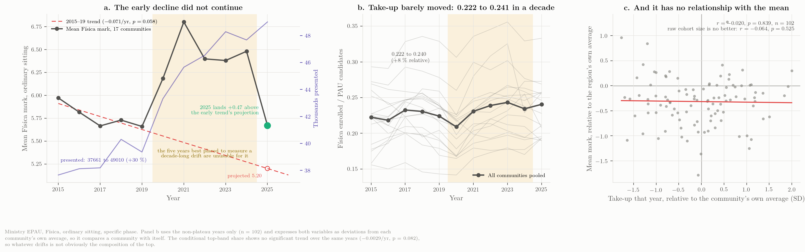
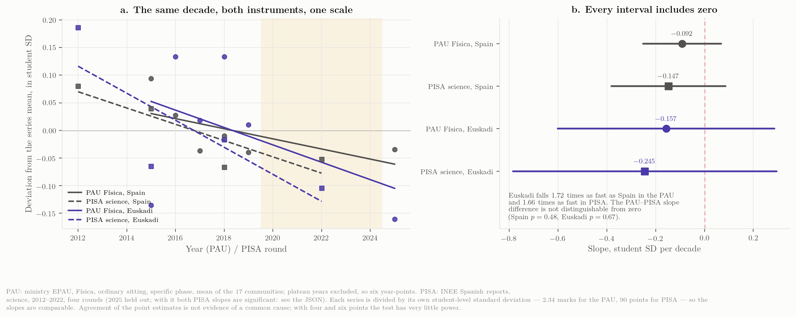
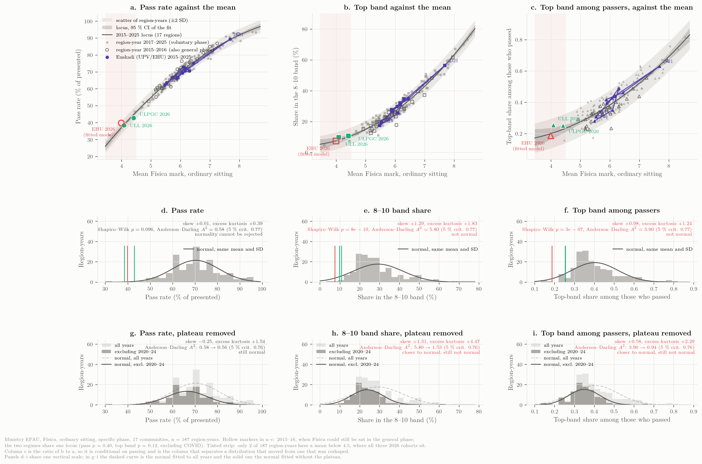
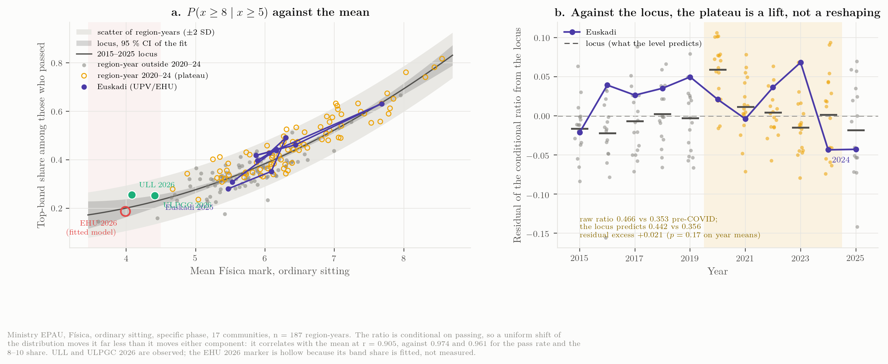
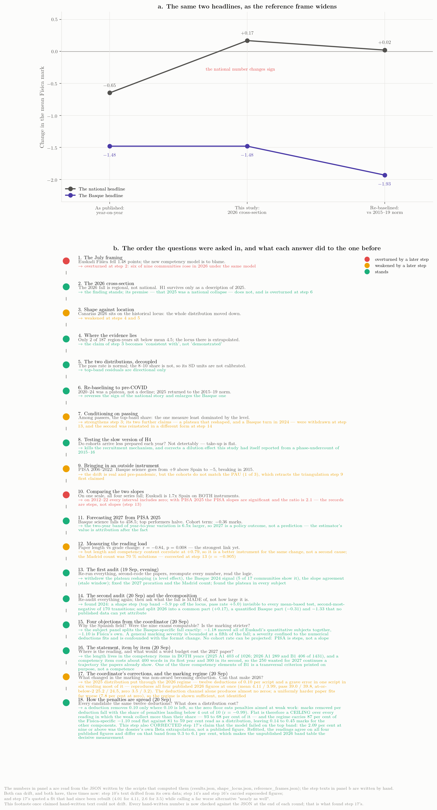
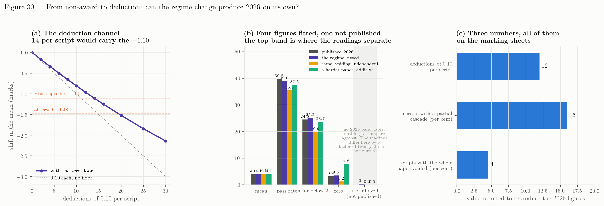
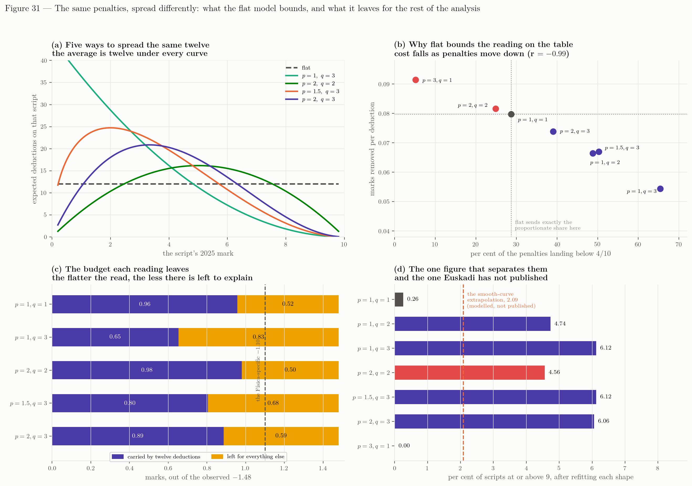

Interpretation and the 2027 question
Which explanations survive the evidence, what would decide between the rest, and what to ask for
This chapter was audited after it was written — every number recomputed, every figure re-derived, the argument read step by step. The corrections are applied in the text below and listed, with what they cost, in Audit and in the last section of this chapter. It was audited a second time on 20 September, which corrected the first audit in turn and added the decomposition that now closes the chapter. Three claims of the first version were withdrawn: that the COVID-era plateau reshaped the grade distribution (it is a level effect), that Euskadi shows a distinctive turn on the conditional top-band measure in 2024 (four other communities show the same), and that the PAU and PISA series fall at the same rate (the fit was stale, and the two records are steps rather than slopes).
The hypotheses, one by one
The evidence assembled in Chapters 2–5 is observational and the exam changes every year, so nothing below is a causal estimate. But the hypotheses that circulated in July can be sorted by what the data allow.
H1 — “The competency model (RD 534/2024) is to blame.” Explains 2025, not 2026. The model was applied in all seventeen communities in both years. In 2025 the Física mean fell in 14 of 17, by \(-0.81\) on average — Euskadi’s \(-0.62\) was below the national move. In 2026 six of nine reporting communities rose under the same model — five by \(+0.5\) to \(+1.13\), Andalucía by \(+0.17\); Euskadi fell \(-1.48\). A national cause cannot produce opposite signs in the same year. The Basque institutions’ July framing (“el nuevo enfoque competencial pasa factura”) is therefore at most a description of 2025. There is a further difficulty with it: the only systematic rating of PAU papers’ competency orientation, covering six communities over 2015–2025 (Sánchez-Tarazaga & Gimeno Rovira, 2026), places País Vasco and Cataluña at the top of the range before the reform, so the Basque papers did not “become competency-based” in 2025 — they were already the most competency-oriented in Spain, and Cataluña, rated alongside them, rose in 2026.
H2 — “The 2026 Basque Física paper was harder, or differently pitched, than its own 2025 paper and than other communities’ 2026 papers.” Consistent with everything. The cohort-wide displacement of the distribution (Chapter 4), the confinement of the damage to Física and Matemáticas II with Química, Biología and Lengua unaffected (Chapter 5), the Catalan mirror image (Física up, Matemàtiques down, same authority, same cohort) and the Canarian coordinators’ own reading of their milder 2025 all point to the paper — its problems, its optionality (two of four problems with no choice in 2026), its marking scheme — as the first-order variable. The July package already noted that the 2026 ordinary paper’s gravitational problem contains a validity issue in its energy comparison. A structured content audit of the 2025 and 2026 papers of the nine communities with a 2026 result was carried out on 19 September and is reported in The papers themselves: five of the six rising communities did not increase the competency content of their paper (they stayed at zero or fell); the sixth, Castilla-La Mancha, added one obligatory contextualised item and rose \(+0.94\), while the Basque paper moved from one competency exercise to half the marks, halved its optionality and changed format at the same time — it is the only paper in the set that changed genre between the two years. The comparison with the 2010–2024 Basque papers is in Sixteen years of one paper: the 2025 break (no theory questions, new structure, first numerical penalties) was absorbed better than the national average; the 2026 step (competencial half, choice halved, −0.1 list and symbolic-first, syllabus opened) is the one the grades react to. An item-level analysis of the 2026 scripts is the natural continuation.
H3 — “Tribunals marked more severely.” Possible, unmeasured, and acknowledged by EHU. The rector’s press conference reported “significant variation between evaluation panels” in Física among other subjects (Argia, 2026), and the 6 July deck published tribunal-mean ranges for Euskara (2.88–4.43), Lengua (5.80–6.92) and Inglés (6.65–7.56) but not for Física. Rater-severity effects of the size needed to move a subject mean by more than a point are not unknown in Spanish PAU marking (Veas & López-Pina, 2025), but the cohort-wide shape of the 2026 distribution says severity, if present, was general rather than confined to a few panels. Only the tribunal-level Física table settles this.
H4 — “The cohort was weaker or differently composed.” Weak inside the PAU data, stronger outside it. The recruitment version fails outright (below) and the PAU shows no drift; but an externally marked instrument shows Basque science falling from +9 points above Spain to −5 over the decade, breaking in 2015 (below). Presentation fell 5.6 % from 2025 and enrolment is unpublished, so a small compositional component cannot be excluded, but the school marks of the preceding cohort were 7.09 with 98 % passing, and the same students’ Química and Biología marks did not move. A weaker cohort does not fail Física and Matemáticas by 1.5 points while holding Química. The same test can be run against Euskadi’s own pre-COVID baselines: relative to 2015–2019, Basque Matemáticas II, Química and Biología sat \(+0.1\) to \(+1.6\) above baseline through 2021–2024 and \(+0.27\), \(-0.01\) and \(+0.31\) in 2025, while Física was \(-0.39\) in 2025 — the only Basque science subject clearly below its norm a year before the 2026 event and the year after the 2024 shape step (Química sits on it at \(-0.01\); on a pooled-phase baseline Química is \(-0.18\) and the contrast is weaker, which is why the convention is stated here) (data/audit/basque_subjects_vs_baseline.csv). Whatever PISA sees in the Basque science base, the Basque PAU sees it in Física only, and only from 2025.
Is the drift real?
H4 is usually posed as a claim about one cohort, but it has a slower version worth testing separately: that the students presenting for Física arrive a little less prepared each year, so that part of 2025 and 2026 is the end of a long drift rather than an event. The mechanism is concrete. Física is voluntary, its examined population grew 30 % over this decade — from 37,661 to 49,010 — and a subject that recruits more widely should be recruiting further down the distribution.
The counts matter here more than usual, and an earlier version of this section got them wrong. Física appears in both phases until 2016 and only in the specific phase from 2017, so counting the specific phase alone understates 2015 and 2016 by about 18 % — 30,839 against a true 37,661 in 2015. Those two years then present as small-cohort years that happen to have high means, and a dilution effect appears which is not there. Every count below is pooled across phases.

Three tests. The two that can see composition find nothing, and the one that appears to support the intuition cannot tell students from papers.
The pre-COVID years do decline, at \(-0.071\) points a year with \(R^2 = 0.75\) (\(p = 0.058\)) — five points falling steadily, which is what the intuition predicts. But the decline did not continue: extrapolated to 2025 that trend projects a mean of 5.20, and the actual 2025 mean is 5.67, \(+0.47\) above it. Whatever was pulling the mean down between 2015 and 2019 either stopped or was offset.
The dilution mechanism is not detectable at all, and this is where the count correction bites. On the undercounted series it looked real and modest — \(r = -0.212\), \(p = 0.032\) — which is what an earlier version of this section reported. On the pooled counts it disappears: \(r = -0.064\), \(p = 0.525\) over the same 102 non-plateau region-years. The entire apparent effect was two mislabelled years.
Panels b and c of Figure 1 test it on the variable that actually corresponds to the mechanism. Raw cohort size confounds a community whose whole candidate population grew with one in which a larger fraction chose Física; only the second is composition. Using Lengua Castellana y Literatura II — compulsory in the general phase, hence a count of candidates — as the denominator, take-up is the share of a community’s PAU candidates sitting Física. It has barely moved: 0.222 in 2015, 0.240 in 2025, a rise of 8 % in relative terms across a decade. And within a community it is unrelated to the mean: \(r = -0.096\), \(p = 0.339\). Física is not visibly recruiting further down the distribution, because it is not visibly recruiting more widely at all.
And the shape measure shows nothing either. The conditional top-band share has no significant trend across the non-plateau years (\(-0.0029\) a year, \(p = 0.082\)), which is where a recruitment effect should show first and most clearly.
The honest summary is that the drift is not visible on any measure that can see composition, and that the one measure suggesting a fall — the 2015–19 trend in the mean — cannot distinguish students from papers. The reason is visible in panel a of Figure 1 and is the same obstruction that produced the reference-frame problem: the five years in the middle of the decade are the plateau, and they are unusable for estimating a slow trend. Six year-points remain to fit a decade. That is why none of these tests is decisive, and it is a better reason to withhold judgement than any of the individual \(p\)-values — a drift of \(-0.07\) a year would need about fifteen clean years to separate from noise, and this decade contains six.
One consequence for the reading of 2026: a slow drift and a one-year event are not competing explanations here. The composition channel, which is the one that could have been measured, contributes nothing detectable, and the pre-2019 decline in the mean — the only surviving evidence of a drift — is confounded between the students and the paper in exactly the way this chapter cannot resolve from PAU data alone.
The 2024 turn: not a level, but the largest negative move in the panel
The conditional ratio, measured against the common locus and then against the field in the same year (Figure 8, panel b), gives Euskadi a positive residual in six of the nine years 2015–2023 (mean \(+0.72\) SD over 2016–2023; negative in 2015, 2020 and 2021), then \(-1.08\) SD in 2024 and \(-0.59\) in 2025 — all on the field-adjusted scale used throughout this chapter. An earlier version of this section read that as “a two-year turn away from eight consecutive years on the other side” and as a Basque signal that predated both candidate causes. The audit removed both readings. The run was not unbroken, and — the test that had not been made — the turn is not Basque: five of the seventeen communities (Aragón, Castilla y León, Comunitat Valenciana, La Rioja and País Vasco) have a residual below \(-0.5\) SD in both 2024 and 2025, nine of seventeen have some two-year run below \(-0.5\) SD in the panel, and three communities have more positive years over 2016–2023 than Euskadi (data/audit/conditional_turn_base_rate.csv). On a right-skewed measure whose “SD” units are, as the shape section says, only indicative, two negative years after a mostly positive run is what five of the seventeen communities show in the same two years.
The second audit, on 20 September, then asked the question neither version had asked. Both of them tested the level of the residual in 2024 and 2025 — whether Euskadi sat low — and the level is unremarkable. But “a turn” is a statement about a change, and the change had never been tested. Across the 170 year-to-year transitions in the panel, Euskadi’s conditional residual moved \(-3.08\) standard deviations between 2023 and 2024. That is the second-largest negative move of the 170, behind Cantabria 2025 (\(-3.98\)), and the largest negative move outside the LOMLOE year. (Two positive moves are larger in absolute size: Castilla y León 2017 and Madrid 2025.) The five communities that shared the low level do not share this: their moves into 2024 are ordinary.
So the correct statement is neither of the two the study has made. There was no Basque signal “arriving a year early” in the sense first claimed, and the retraction went too far: something did happen to the shape of the Basque distribution in 2024, it was an unusually large and unusually negative one-year move of the top-band residual — eleventh of the 170 on the combined size of both excesses — and it happened on the last pre-LOMLOE paper. What it was is taken up in the decomposition, which is where this chapter now ends.
What also remains is a cheap monitoring statistic — the conditional ratio is the one published quantity least dominated by the level — and a caution: the school record of the 2024–25 cohort (7.09, 98 % passing) and the widening school-to-PAU gap (1.62 in 2025, 3.10 in 2026 on unchanged school marks) cannot be read through it, because a thinner top tail and a paper that discriminates less at the top produce the same signature.
An instrument the Basque tribunals do not mark
The ambiguity above — a thinner top tail or a paper that stopped rewarding it — is not resolvable from the PAU, because the PAU produces one number for both. It needs an instrument that measures the same students and is marked elsewhere. PISA is that instrument, and the cohorts can be matched by birth year: PISA tests 15-year-olds, modal 4º ESO, who reach the PAU two years later — although PISA samples the whole age cohort, repeaters included, while the PAU is sat by the Bachillerato half of it and Física by about a quarter of the PAU candidates, so the match is by cohort, not by population.
That alignment also says what cannot be done. Only three PISA rounds fall inside this study’s PAU window — 2015 → PAU 2017, 2018 → PAU 2020, 2022 → PAU 2024 — and two of the three land in the marking plateau. A PAU–PISA correlation would be three points with two contaminated, and none is attempted here. What is available is one aligned cohort, compared on the one quantity both instruments measure at the same place in the distribution: PISA’s proficiency levels 5 and 6 are the top of its scale as the 8–10 band is the top of the PAU’s.

The long series settles the question the two-round version could not, and it settles it against the reading offered here in an earlier draft. Across 2006, 2009 and 2012 the Basque science score ran +6.2, +6.4 and +9.2 points above Spain. Between 2012 and 2015 it fell 22.6 points while Spain fell 3.7, and it has not recovered: \(-9.7\) against Spain in 2015, \(+4.1\) in 2018, \(-5.0\) in 2022. Over the decade to 2022 the Basque fall is 26 points against Spain’s 12.
The break is in the 2015 round — administered five years before the schools closed. Sampling error matters for the rest of the series: the INEE tables give the Basque science mean a standard error of 2.4 (2012), 3.0 (2015), 4.2 (2018), 4.6 (2022) and 4.3 points (2025), Spain’s 1.6–2.1, so the 2012→2015 change in the gap (\(-18.9\)) is about four standard errors while the 2018→2022 move (\(-9.1\)) is within two standard errors and the 2015→2018 one (\(+13.8\)) is 2.4, so neither is the kind of step 2012→2015 was; the moves between them are; “\(+4.1\) in 2018” and “\(-5.0\) in 2022” are not distinguishable from each other. The break and the 2025 gap (\(-18.6 \pm 4.7\)) are real; the shape of the series between them is not resolved. An earlier version of this section read only 2018 and 2022, found the Basque top tail thin in 2022, and attributed it to the pandemic cohort. That was wrong, and wrong in a way that mattered: it was offered as a reason to discount the slow-drift reading, and the earlier rounds show the opposite. A standing Basque advantage in science became a deficit a decade ago, on an instrument marked outside the Basque system, and stayed one.
The top of the distribution tells the same story without a trend. The Basque share at proficiency levels 5–6 in science runs 3.25 % in 2015, 3.87 % in 2018 and 3.32 % in 2022, against Spanish figures of 4.98 %, 4.18 % and 4.92 %. There is no progressive thinning: 2015 is as low as 2022. What there is, is a level that has sat below Spain’s in all three rounds and below the OECD’s (7.47 % in 2022) in all of them.
But the cohorts do not line up. This is the second correction, and it undoes the triangulation this section originally claimed. Of the three PISA rounds that map onto a PAU year inside the study window, only one agrees with the PAU conditional measure:
| Cohort | PISA gap vs Spain | PAU conditional vs field | |
|---|---|---|---|
| PISA 2015 → PAU 2017 | \(-9.7\) | \(+0.70\) SD | disagree |
| PISA 2018 → PAU 2020 | \(+4.1\) | \(-0.82\) SD | disagree |
| PISA 2022 → PAU 2024 | \(-5.0\) | \(-0.96\) SD | agree |
One of three is what chance produces. The 2022/2024 match, which this section was originally built around, is not evidence of a cohort mechanism; it is the one case out of three in which two noisy measures happened to point the same way.
What survives is worth more than what was lost, and it supports the drift reading rather than the event reading. There is a real, large and sustained deterioration in Basque science attainment beginning in 2015, visible to an external instrument, which the PAU Física series does not show — Euskadi’s Física mean sits near its own baseline through 2024. Two conclusions follow. The PAU is not a good detector of whatever PISA is measuring, which is unsurprising given that Física is sat by a self-selected quarter of the cohort. And the slow-drift version of H4, which the previous section could not find in the PAU data, is clearly present in the schooling that precedes it. Those are compatible: a decade-long weakening of the base need not show in a subject whose takers are drawn from the top of it.
Do the two instruments fall at the same rate?
The cohort test above compares single years and finds noise. A gentler question is whether the two series, taken whole, descend at the same rate — whether Figure 1’s panel a and Figure 2’s panel a are parallel. That is a better question than whether they correlate, which three overlapping points cannot answer, and it turns out to have a more interesting answer than the cohort test did.
It needs a common scale. Each series is divided by a student-level standard deviation: 2.343 marks for PAU Física, the median of the thirteen standard deviations published by the Comunitat Valenciana universities for 2025–2026 (the only community that publishes them) and consistent with the Beta fits of Chapter 4; about 90 points for PISA science, from Spain’s p10–p90 spread in the 2015 tables. A slope in standard deviations per decade is then the same quantity on both instruments. The PISA fit runs over the four rounds 2012–2022, the decade the PAU series covers; the 2025 round is held out because the section below uses it as the forward-looking measurement, and the fit that includes it is reported at the end.

| Series | Slope, SD per decade | 95 % interval |
|---|---|---|
| PAU Física, Spain | \(-0.092\) | \([-0.251,\ +0.068]\) |
| PISA science, Spain | \(-0.147\) | \([-0.381,\ +0.086]\) |
| PAU Física, Euskadi | \(-0.157\) | \([-0.601,\ +0.286]\) |
| PISA science, Euskadi | \(-0.245\) | \([-0.785,\ +0.296]\) |
The point estimates are strikingly consistent. All four decline; the PAU and PISA slopes for the same population differ by \(+0.06\) and \(+0.09\) SD per decade, differences that no test could distinguish from zero (\(p = 0.48\) and \(p = 0.67\)). And the relative figure is closer still: Euskadi falls 1.72 times as fast as Spain on the PAU and 1.66 times as fast on PISA. Two instruments with nothing in common — different ages, different subjects, different markers, different scales — put the Basque disadvantage at the same multiple of the national one.
That is worth stating because it tempers a claim made in the previous section. There it was said that PISA shows a deterioration the PAU Física series does not. On cohorts that stands, and the matching is one of three. On trend it overstates: the PAU does decline, at a rate whose point estimate sits comfortably inside PISA’s interval, and the reason it looked absent is that the plateau hides it in the raw series and the six surviving year-points cannot make it significant.
The honest summary is the one panel b is drawn to make unavoidable: on this window every interval includes zero. With four PISA rounds and six usable PAU years, these data are consistent with two instruments measuring one common decline at the same rate — and equally consistent with no decline at all in either. The agreement of four point estimates, and of two ratios to within 4 %, is the kind of coincidence that is worth recording and is not worth believing on its own: the ratio is of two slopes whose own \(p\)-values are 0.19 and 0.38, and has no usable interval.
Two further things the audit added. First, adding the 2025 round changes the PISA half of the table: on 2012–2025 the Spanish PISA slope is \(-0.155\) SD per decade \([-0.256,\ -0.054]\) (\(p = 0.016\)) and the Basque one \(-0.327\) \([-0.603,\ -0.051]\) (\(p = 0.033\)), both significant on their own, and the Basque-to-Spanish ratio becomes 2.1 rather than 1.7 (data/analysis/slope_compare.json). Second, and more fundamental: the comparison is not well posed as a comparison of rates, because neither record is a slope. The Basque PISA series is a step in 2015 followed by noise and a second step in 2025; the Basque PAU series is a plateau followed by a step. A straight line through step changes measures where the steps fall in the window, not a common rate of decline. The right statement is the weaker one: both instruments show the Basque position relative to Spain deteriorating over the decade, in steps rather than steadily, and the PAU shows it only from 2025 and only in Física. It is a reason to keep measuring both, which is the recommendation of the next section, rather than a finding.
How much of the paper is reading?
The author of this study was involved in setting the 2026 Basque Física paper, and specifically chose to expand the statement of its second exercise — spelling out each requirement and repeating it — because a competency-style saber básico was entering the examined set for the first time. That account is the origin of the hypothesis tested in this section, and it is first-hand evidence no amount of text analysis could have supplied: it establishes that the length was deliberate rather than accidental. It also means this section examines a decision its author made. The author is the Física coordinator whose account Sixteen years of one paper reports in the third person; that chapter’s “testimony of the coordinator” is the author’s own. The provenance note in Methods records the same facts.
Every section so far has treated the paper as a single variable — harder or easier, more or less competency-oriented. It has another dimension that is objective, easy to measure and so far unexamined: how much text a candidate must read before answering. The competency reform pushes in exactly that direction, because contextualised items carry a scenario and the scenario has to be written down.
That matters more if the cohort’s reading has weakened, and the Basque cohort’s has, far more than its science. Over the decade to 2025 the País Vasco PISA reading score falls 72 points, from 491.4 to 419.1, against a science fall of 24.5. The gap to Spain widens from \(-4.1\) to \(-32.2\). Whatever else is true of these students, reading is where they have lost most ground. (There is no 2018 point: the Spanish PISA 2018 report contains mathematics and science only, because the OECD withheld Spain’s 2018 reading results over anomalous response patterns.)

The association is as strong as any this study has found between a property of a paper and the movement of its grade — and it ties with the contextualised-points measure of Chapter 11, which gives \(-0.86\) on the same eight: \(r = -0.905\), \(p = 0.002\) across the eight communities with both a 2026 result and an archived pair of papers (Castilla-La Mancha’s papers exist only as transcripts and are excluded), and \(\rho = -0.86\), \(p = 0.007\) on ranks. Stripping rubric and constant tables from the counts moves it to \(-0.94\); leaving País Vasco out, \(-0.88\) (\(p = 0.008\)). Asturias, Madrid and the Comunitat Valenciana shortened their papers and rose; Extremadura, Canarias and País Vasco lengthened theirs and fell. The Basque paper lengthened 45 %, from 1 335 words of statement to 1 940, and fell furthest.
Those are the audited numbers. The first version of this section counted whole PDF files and reported \(r = -0.84\), a Basque change of \(+39.5\) % and a Madrid paper of 4 070 words; the audit found that the Madrid files embed the marking criteria and full solutions (about 70 % of their words — the statement itself went from 1 127 to 1 093 words, a shortening), that the Valencian files are bilingual, and that the EHU Spanish files open with the Basque instruction block. Counting statement text only, the correlation strengthens rather than weakens. The raw-file figures are kept in data/analysis/reading_load.json for the record.
Three cautions, and the second is the one that matters.
The word count includes everything the candidate is given, and papers that offer more choice print more text for the same student workload. That is why only within-community change is used, and why the levels (Cataluña 1,628 words, Asturias 899) are not compared.
Length and competency content are not independent. The competency measure of The papers themselves correlates with the length change at \(r = +0.79\) (\(p = 0.02\), \(n = 8\)). Contextualised items are longer items, so the two are largely one signal seen twice, and with eight points they cannot be separated. What length adds is not a second cause but a better instrument: it is a count, reproducible by anyone with the PDFs, where the competency coding is a judgement made by one reader (a blind second coder agreed with it on every direction of change; Audit). On the same eight communities the competency-points measure gives \(-0.64\) and the contextualised-points measure \(-0.86\), so length leads it but not by much; length is worth preferring because it is a count anyone can reproduce from the PDFs, not because it is the stronger signal. Two cautions belong here as well: the hypothesis was suggested by the author’s knowledge of his own paper’s length, which makes length a variable chosen after the outcome was known, and with eight points the result should be read as exploratory however small its \(p\)-value.
And the interaction that motivated the section — long papers hurting weak readers more than strong ones — is not tested here. Testing it needs the reading level of each community crossed with its length change, and with eight communities an interaction term would be fitting noise. It remains a hypothesis, and a cheap one to settle: the 2027 paper could be set with its statement length recorded, and the Basque reading collapse means that number now carries more weight than it did.
What PISA 2025 says about PAU 2027
PISA 2025 was published on 8 September 2026, ten days before this chapter was first written, and science was its major domain. It is the cohort that sits the PAU in 2027, so for the first time in this study a genuinely forward-looking measurement exists, and it is worth asking what estimate it supports.
The measurement itself is severe. Basque science falls to 458.5, against a Spanish 477.1 and an OECD 481.9. The gap to Spain, which was \(+9.2\) in 2012 and \(-5.0\) in 2022, is now \(-18.6 \pm 4.7\) — the largest in the series and nearly double the previous worst (\(-9.7\) in 2015). At the top of the distribution the Basque share at levels 5–6 falls by almost half, from 3.32 % to 1.83 % (a change of about two standard errors), against a Spanish figure that eases from 4.9 % to 4.2 %. On the instrument that does not depend on Basque marking, the cohort now in 2º Bachillerato, which sits the PAU in 2027, is the weakest this series has recorded.

Converting that into a PAU estimate is arithmetic, and the arithmetic is what makes the answer honest. The Basque PISA fall of 21.0 points is \(0.233\) of a student standard deviation; transferred one-for-one to the PAU — the relation figure 22 could neither reject nor establish — and prorated over the two years separating the PAU 2025 and PAU 2027 cohorts, it is a cohort term of \(-0.36\) marks (about \(\pm 0.11\) from PISA’s sampling error alone); measured from the 2026 cohort, one year closer, the same move gives \(-0.18\).
Set that against what else moves the number. The standard deviation of Euskadi’s own year-to-year change in the Física mean, excluding 2026, is 0.855 marks (0.72 without the COVID transitions); over two years, treating the changes as independent, the 95 % band on that alone is \(\pm 2.37\). That term is not “the paper”: it is everything the PISA cohort measure does not capture — paper, marking, sitting composition and cohort noise together — and the random-walk assumption behind the two-year band overstates it for a series that visibly reverts to its mean. Even so, the cohort term is 6.5 times smaller than the band it has to be read against. And 2026 itself moved the mean by \(-1.48\) in a single year on a changed paper — four times the cohort term, and more than the whole decade of PISA drift converted the same way (\(1.23\) marks from 2012 to 2025).
So the estimate exists and is this:
| If the 2027 paper resembles | Cohort term | Central estimate | 95 % band from the year-to-year term alone |
|---|---|---|---|
| the 2025 paper | \(-0.36\) | 5.11 | \([2.74,\ 7.48]\) |
| the 2026 paper | \(-0.18\) | 3.81 | \([1.44,\ 6.18]\) |
The two scenarios differ by 1.3 marks, most of the size of the 2026 event; the cohort contributes a third of a mark or less to either. That is the finding, and it is not the one the question was hoping for. PAU 2027 is not something PISA predicts. It is something the 2027 paper and its marking scheme decide, with the cohort supplying a slow downward nudge three and a half to seven times smaller than the choice. A forecast whose interval spans 2.7 to 7.5 is not a forecast; it is a restatement that the exam is the dominant variable.
Two things follow that are worth acting on rather than reading. The cohort term, small as it is, points the same way as every other measure in this section, so the sensible default for 2027 is that the intake will be slightly weaker than 2025’s and considerably weaker than the decade’s average — which argues for the paper being set with that in mind rather than against a remembered cohort. And the honest use of PISA 2025 here is not prediction but attribution after the fact: when the 2027 result arrives, the \(-0.36\) is the part that should not be blamed on the paper, and everything beyond it is the part that should be explained.
H5 — “Students under-prepare Física because the weighting rules make it dispensable.” Plausible as a slow driver, not as a 2026 trigger. This is the Canarian coordinators’ hypothesis for their own decline (few degrees need a high Física mark; Matemáticas II carries the weighting; Física is examined last on a long day). It fits the ten-year erosion of the top decile better than a one-year fall of 1.5 points, and it is the hypothesis most directly addressable by the Basque ponderación table and the exam timetable for 2027.
H6 — “Language or network bias.” No evidence either way for Física. The 2010–2022 series shows euskera/castellano differences of a few tenths in both directions and no sign that either network fails Física differentially; EHU’s 2026 bias analysis was run for Euskara II. Nothing published for Física 2026 speaks to this.
The ranking that emerges is H2 first, H3 unresolved and testable, H5 as background, H1 as a national 2025 coincidence that cannot be separated from the end of the COVID-era plateau and says nothing about 2026, H4 unsupported as a Basque-specific cohort effect in the PAU (though the PISA level decline is real), and H6 unsupported.
Was 2026 a shift or a change of shape?
The hypotheses above divide along a line the published aggregates can be made to test. A harder paper or a uniformly stricter marking scheme moves the whole distribution down together. A change in who sits the exam, or a marking change that bites only at the bottom, changes its shape — it thins the pass region without touching the top, or the reverse. The published data carry three summaries of the same distribution — the mean, the pass rate, and the share in the 8–10 band — and the second and third are near-deterministic functions of the first: across seventeen communities and eleven years the correlations are \(r = 0.974\) and \(r = 0.961\). A scatter of pass rate against mean therefore mostly redraws arithmetic. What carries information is the residual: a cohort sitting off the common locus has a differently shaped distribution, not merely a lower one.

Two things follow, and the first is a precondition for the second.
The locus is a property of the marking scale, not of the cohort. Física’s examined population changed substantially inside this window: until 2016 it could be taken in the general phase, from 2017 LOMCE left it voluntary only, and the number presented grew by 30 % — from 37,661 to 49,010, pooled across phases. If the mapping from mean to pass rate depended on who sits the paper, it should step at that boundary. It does not: comparing residuals before and after 2017, the pass panel gives \(p = 0.40\) and the top-band panel \(p = 0.12\) once the two COVID sittings are excluded. On the full series the top-band difference does reach \(p = 0.008\), but that result is carried by 2020, whose year-mean residual of \(+3.6\) pp is the largest of the eleven, and it is the COVID year — so the honest reading is the conservative one. In Figure 6 the hollow 2015–16 markers interleave with the later ones along the same curve. That stability is what licenses reading a 2026 point off the locus at all.
Where 2026 can be observed, it is a location shift — but the test is weaker than it looks. The only 2026 cohorts with a published histogram are the two Canarian universities, and both land on the locus: ULL at \(-0.08\) SD on the pass panel and \(+0.65\) SD on the top band, ULPGC at \(-1.04\) and \(+0.24\), against a historical scatter that runs from \(-2.6\) to \(+3.0\) SD on the pass panel and \(-3.5\) to \(+2.6\) on the top band. Their distributions are the same shape as everyone else’s at that mean — simply further down it. Nothing was thinned selectively: the top of the Canarian cohort fell with the rest.
How much that settles depends on how much evidence sits where these cohorts fall, and the answer is honestly very little. The 187 region-year means pile up between 5.0 and 6.5 — they are themselves right-skewed and heavy-tailed rather than normal (skew \(+0.60\), excess kurtosis \(+0.88\); Shapiro–Wilk \(p = 0.00017\), Anderson–Darling \(A^2 = 2.06\) against a 5 % critical value of \(0.75\)). Only 2 of 187 sit below 4.5 — the tinted strip in all three upper panels of Figure 6 — and none within \(\pm 0.25\) of where ULL (4.08) and the Basque cohort (3.99) fall. The curve there is therefore an extrapolation from the body of the data, and the pass panel’s own 95 % interval is \(\pm 1.41\) pp at mean 4.08 against \(\pm 0.32\) pp at mean 6.0 (on the 8–10 panel, \(\pm 2.04\) and \(\pm 0.46\)), which is why the figure draws that interval as well as the flat scatter band. ULL’s residual of \(-0.16\) pp sits comfortably inside the uncertainty of the very curve it is measured against.
The columns are also not equally well-behaved, and panels d, e and f of Figure 6 separate them because they give different answers. The pass rate is symmetric and close to normal (skew \(+0.01\), excess kurtosis \(+0.39\); Shapiro–Wilk \(p = 0.096\), Anderson–Darling \(A^2 = 0.58\), below the critical value — normality cannot be rejected). The 8–10 share is not (skew \(+1.29\), \(A^2 = 5.80\)), and neither is the conditional ratio (skew \(+0.98\), \(A^2 = 3.90\)). Right-skew is what one should expect of a tail quantity pressed against zero, but it has a practical consequence: a residual quoted “in standard deviations” assumes roughly symmetric scatter, so the SD units are trustworthy on the pass panel and only indicative on the other two. Those residuals should be read as directional, not as calibrated probabilities.
The third column settles the question the first two could not. A uniform shift of the whole distribution moves the pass rate and the 8–10 share together, so a cohort sitting on both loci is consistent with a shift but does not demonstrate one — the two measurements are not independent tests. The conditional ratio is the quantity that distinguishes them, and on it the two observed 2026 cohorts sit above the locus, not below: ULL at \(+1.05\) SD and ULPGC at \(+0.53\) SD. Among the students who passed in Canarias in 2026, the top band is if anything slightly better represented than their mean predicts. Whatever happened there did not thin the top of the cohort relative to its middle, which is the first measurement in this sequence to strengthen a conclusion rather than qualify it.
The consequence is a limit on power, not a reversal of sign. Nothing in the 2026 data indicates a change of shape, and a large one would still have shown: a cohort that had thinned only at the bottom would sit several points off the curve, far outside even the widened interval. But a modest reshaping at mean 4 could not be detected with two historical neighbours, so “consistent with a pure location shift” is the correct reading, and “demonstrated to be one” is not.
That bears on the ranking above in one direction and one only. It is evidence against H4: a cohort that had become differently composed would be expected to sit off the locus, and Canarias does not. It does not discriminate between H2 and H3, because a harder paper and a uniformly severer marking scheme produce the same signature here — both move the distribution without reshaping it. What it weighs against is any mechanism acting strongly and selectively on one part of the range.
The Basque case cannot be put to this test with what is published. The 2026 band shares shown in Chapter 4 are output of the Beta fitted to the mean, the pass rate and the zero count; plotting them here as evidence would be circular, which is why the EHU 2026 marker in Figure 6 is drawn hollow. Its apparent residual of \(-0.05\) SD on the top band is the model agreeing with itself and should not be read as a result. Resolving the Basque case the same way needs one thing: the observed 2026 grade histogram, which is item 3 of the data requests below.
One data caveat surfaced in building this. The Ministry’s own cube is internally inconsistent for two of the 187 region-years — Galicia 2015 and 2016 — where the published pass rate and the published \([0,5)\) share disagree by 5.64 and 4.48 pp; these are the two years in which Física appeared in both phases, so the cells are carried on different bases. Every band row sums to 100.0 and the remaining 185 agree to rounding, so the two points are kept rather than discarded, and they are recorded in data/analysis/shape_locus.json.
What you compare against decides what you find
Every number in this report is a change measured from some reference point, and the reference point is almost never argued for. It is usually the previous year, because that is what the sources publish and what the press quotes. Reading the same series against a different baseline does not merely adjust the size of the effect — in this case it reverses the sign of the national story.

The pattern in panel a of Figure 7 is not a decline. It is a plateau that ended. The nine communities sit \(+0.50\) to \(+1.05\) above their pre-COVID baseline in every year from 2020 to 2024, peaking in 2021, and then return to it in 2025. The relaxation did not decay gradually, which is what “returning to normal” would look like; it held for three full years after the peak — 2022, 2023 and 2024 are \(+0.62\), \(+0.53\) and \(+0.50\) — and then ended in a single step. Whatever produced the COVID-era regime was still producing it in 2024, and stopped in 2025.
It was not a Física phenomenon either. Run on every subject in the Ministry cube (seventeen communities, each subject against its own 2015–2019 norm; data/audit/plateau_by_subject.csv), the plateau is present everywhere — Matemáticas II \(+0.48\) to \(+0.97\), Química \(+0.58\) to \(+0.94\), Biología \(+0.17\) to \(+0.55\), Historia \(+0.29\) to \(+0.75\), Lengua \(+0.23\) to \(+0.47\) — and in 2025 every science subject returned to within about a fifth of a point of its norm (Física \(-0.06\), Matemáticas II \(+0.11\), Química \(+0.20\), Biología \(-0.21\)), while Historia kept most of its lift (\(+0.53\)). The 2025 fall was the simultaneous end of a subject-general regime.
Was it a uniform lift? The conditional measure of Figure 6 was first read as saying no: among students who passed, the share reaching the 8–10 band ran \(0.353\) across 2015–2019, rose to \(0.466\) through the plateau and came back to \(0.331\) in 2025, and an earlier version of this section called that a reshaping (\(p = 4 \times 10^{-11}\)). The audit withdrew it. The conditional ratio tracks the mean at \(r = 0.905\), so most of that rise is what the level alone produces: the locus predicts \(0.356\) at the pre-COVID mean of 5.77 and \(0.442\) at the plateau mean of 6.44, about 0.09 of the observed 0.11. Measured on the locus residual, the plateau’s excess is \(+0.02\) (about half a residual SD), \(p = 0.17\) on the five-against-five year means, and it is carried by 2020 alone (residual \(+0.06\); 2021–2024 are within \(\pm 0.02\)). To the precision these data allow, the plateau lifted the distribution and did not reshape it. Panels h and i of Figure 6 still show that the conditional ratio’s departure from normality is largely an artefact of those five years (Anderson–Darling \(3.90 \to 0.94\) without them), where the raw 8–10 share stays non-normal at \(1.53\) because its skew is intrinsic.

That is enough to change the reading of three separate claims in this report.
| Measured as | Change | Invites the conclusion |
|---|---|---|
| 2024 → 2025, nine communities | \(-0.65\) | “A national collapse; the competency model bites.” |
| 2025 → 2026, nine communities | \(+0.17\) | “A recovery everywhere, so 2026 is a Basque problem.” |
| 2015–19 baseline → 2026, nine communities | \(+0.02\) | “Nothing has happened; Spain is where it was a decade ago.” |
| 2025 → 2026, Euskadi | \(-1.48\) | “The Basque fall is one and a half points.” |
| 2015–19 baseline → 2026, Euskadi | \(-1.93\) | “The Basque fall is nearly two points — a third larger.” |
Rows one and three are the uncomfortable pair — and row three hides a dispersion that is the real 2026 story: against their own pre-COVID baselines, Madrid (\(+1.02\)), Castilla-La Mancha (\(+0.86\)), Cataluña (\(+0.63\)), Andalucía and Asturias (\(+0.48\)) and Valencia (\(+0.34\)) sit above their norm in 2026, Extremadura (\(-0.78\)), Canarias (\(-0.86\)) and País Vasco (\(-1.91\)) below it (data/audit/baseline_2026_by_community.csv). “Spain is where it was” is an average of communities a point apart in both directions. Both are true of the same nine communities and the same ministry series, and they are not reconcilable as statements of fact about “what happened to Physics in Spain”: one says the subject collapsed, the other that it is exactly where it was in 2015–2019, \(+0.02\) away after eleven years. The contradiction is entirely in the choice of reference year, and the year-on-year framing is the one that misleads, because 2024 was not a normal year to measure from.
This weakens H1 further than the hypothesis review above already did, though not as far as an earlier version of this section claimed. That section could say only that the competency model explains 2025 and not 2026. Measured from the pre-COVID baseline, the 2025 sitting did not fall below the historical norm, it returned to it — in every subject at once. A model introduced in 2025 that leaves the national Física mean 0.15 below where it sat in 2015–2019 is not doing anything visible to the level. What the frame cannot decide is why the plateau ended in 2025 rather than in 2023 or 2024: the withdrawal of a COVID-era regime and the first LOMLOE papers, with their new marking instructions in every subject, arrive in the same year, and nothing in the PAU series separates them. The honest form of H1 is therefore: the reform coincides with the end of a subject-general plateau and cannot be told apart from it; it does not explain the 2026 Basque result, which is the one this study is about.
It also makes the Basque case worse, not better. The headline everyone quoted is \(-1.48\), measured from 2025. Against Euskadi’s own pre-COVID baseline of 5.92 the 2026 fall is \(-1.93\) — a third larger than the number in circulation — because 2025 was already 0.45 below that baseline. The Basque series did not fall once; it fell twice, and only the second fall was reported as news.
None of this is a criticism of the sources. The Ministry publishes years, the universities publish years, and a year-on-year change is the only comparison most readers can make from what is published. But it means the honest form of every claim in this report carries its reference point on its face, and that the three sentences most likely to be quoted from this study — “the 2025 fall was national”, “the 2026 fall is regional”, “Euskadi fell 1.48” — are each true only in the frame that produced them.
Why measure a Basque fall against a Spanish field at all?
The objection is a fair one and it should be answered before the decomposition uses the field. The question this study asks is what happened in Euskadi. Euskadi’s mean is published. Why introduce eight other communities, each with its own exam, into the measurement of a Basque event?
Three frames give three numbers, and the first thing to say is how little they differ.
| Frame | What it asks | 2026 |
|---|---|---|
| Year on year | how far did the Basque mean fall from 2025? | \(-1.48\) |
| Against Euskadi’s own 2015–2019 norm | how far is 2026 from where Euskadi normally sits? | \(-1.91\) |
| Against the nine-community field | how much of the fall is Euskadi’s own, once the country’s move is taken out? | \(-1.65\) |
They span 0.43 of a mark around a fall of roughly a point and a half. No conclusion in this study turns on which is used, and the design implications in the last section of this chapter are identical under all three. Anyone who prefers to read the whole thing with \(-1.48\) in mind, or with \(-1.91\), will not be misled.
What the field buys is not size but separation, and it buys it for one specific purpose that no absolute number can serve: telling a year in which everyone fell from a year in which only Euskadi did. 2025 is the case that makes the point. Read absolutely, Euskadi lost 0.62 marks in 2025 and that looks like a Basque problem worth a working group. Read against the field, which lost 0.65 in the same sitting, there is nothing Basque in 2025 at all — and the whole of the anomaly sits in 2026, where the field gained 0.17. Without the field those two years look like one slide of 2.10 marks over two sittings. With it, they are one national event followed by one Basque event, and only the second is the coordination’s to answer.
What the field is not is a control group, and it is important not to let the arithmetic imply otherwise. A control requires that the comparison units differ from the treated unit only in the treatment. These nine sat nine different papers, marked to nine different criteria, by nine different sets of correctors. Chapter 11 measures how different, and the answer is: very. Euskadi is the only community that moved all four of those axes in the direction the orientations ask for: optionality 75 % → 50 %, competency-coded marks 25 % → 62.5 %, and substantive context and contextualised marks up 50 and 75 points. Castilla-La Mancha is the only other that both cut optionality and raised its competency share, and it cut contextualised marks by 45 points at the same time; Cataluña moved the competency share 37.5 points the other way; three communities moved on no axis but the contextualised share. Across the nine, the further a paper moved toward the competency model the further its mean fell — \(r = -0.70\), \(p = 0.035\), though Euskadi is the extreme point on both axes and dropping it leaves \(r = -0.40\), \(p = 0.33\) among the other eight, so that coefficient is largely one community making its own point rather than eight communities agreeing.
The practical consequence is a range rather than a number. Measured against all eight other communities the Basque-specific component is \(-1.65\) on the pooled ministry basis and \(-1.85\) on the published-means basis; measured against only the six whose papers barely moved it is \(-1.95\). Measured against nothing at all it is \(-1.48\). The Basque-specific fall is somewhere in \([-1.95, -1.48]\), and the reason it cannot be narrowed is that nobody has calibrated these nine papers against each other. That is request 9 below, and it is the request that would turn a comparison into a control.
One further thing follows for how this chapter’s headline should be quoted. If the other communities’ 2026 rises came partly from keeping papers their own candidates found easier — which is what the reform-intensity association is consistent with and does not establish — then the field’s \(+0.17\) is not an estimate of what Basque candidates would have scored on an unchanged exam, and the \(-1.65\) overstates the part of the fall that is specifically Basque ability or marking while understating the part that is specifically the Basque paper. Both readings are in the decomposition that follows, which is why it reports the field term separately rather than folding it in.
How this reading was arrived at, and what it cost each earlier one
The previous section shows that the frame decides the answer. This one records the order in which the frames were tried, because the sequence is itself a finding: the analysis in this chapter was not assembled in one pass, and most of its fourteen steps damaged the conclusion that motivated them — the last two, which audited the rest, most of all.

The sequence in panel b of Figure 9 ran as follows.
Step 1 was the July framing, taken from the institutions: Física fell 1.48 points and the competency model is to blame. Step 2, the cross-section of 2026 in Chapter 3, overturned it — six of nine communities rose in 2026 under the same model, and a national cause cannot produce opposite signs in the same year. That is the step that produced this chapter’s original hypothesis ranking.
Step 3 asked whether the 2026 fall was a change of shape or of position, and answered that Canarias 2026 sits on the historical locus: the distribution moved down without being reshaped. Step 4 then asked how much evidence supports the locus where those cohorts fall, and found almost none — two region-years of 187 below mean 4.5, and a fit whose own interval there is four times its width at the centre of the data. The step-3 claim survived, but only as consistent with a location shift rather than a demonstration of one. Step 5 decoupled the two distributions and found the 8–10 share strongly non-normal, so the standard-deviation units in which the step-3 residuals had been quoted are not calibrated on that panel, and those residuals are directional only.
Step 6 re-baselined to the pre-COVID norm and did the most damage of all — not to step 3, but to step 2. Step 2’s reasoning depends on 2025 having been a national collapse that the competency model could be blamed for. Measured from 2015–2019 the 2025 sitting was not a collapse: it was a return to the norm after a five-year plateau, and the nine communities finish 2026 \(+0.02\) from where they started in 2015. So the hypothesis ranking earlier in this chapter had to demote H1 further than “a description of 2025”.
Step 7 conditioned on passing. The pass rate and the 8–10 share are both dominated by the level, so a cohort lying on both loci was never two independent tests; their ratio is less so, and on it the two observed 2026 cohorts sit above the locus. That part stood. The step also made two further claims — that the plateau had reshaped the distribution, and that Euskadi showed a turn in 2024 that predated both candidate causes — and both were withdrawn at step 13.
Steps 8 to 12 widened the evidence beyond the PAU: the slow version of H4 (no recruitment drift visible; a dilution effect this study had itself reported turned out to be a phase-undercount of 2015–16), PISA as an outside instrument (a Basque break in 2015; the cohort triangulation first claimed, then retracted, one of three), the slope comparison (four series falling; “Euskadi 1.7 × Spain on both”), the 2027 estimator (a cohort term of a third of a mark against a two-year band of year-to-year variation 6.5 times larger), and the reading load (the strongest single correlate of the 2026 grade change, \(r = -0.905\)).
Step 13 was an audit of the other twelve, made on the evening of 19 September with every script re-run from the raw sources, every number recomputed independently, a blind second coder on the exam papers and a reading of the logic (Audit). It cost more than any step before it. The plateau “reshaping” was a level effect (the conditional ratio tracks the mean at \(r = 0.905\); the residual test gives \(p = 0.17\)). The Basque 2024 “signal” is shared by four other communities and rests on a run that was not unbroken. The slope agreement was stale — the committed figure already contained the 2025 round, on which both PISA slopes are significant and the ratio is 2.1 — and the comparison itself treats two step-changes as slopes. The 2027 estimator added the same cohort term to both scenarios when the 2026 baseline should carry half of it. The reading-load count included Madrid’s embedded solutions; corrected, the correlation is stronger (\(-0.905\)) but the sentence explaining Madrid’s length was simply wrong. And the audit found the test the frame section should have run: the plateau, and its end in 2025, are in every subject.
Step 14, on 20 September, audited the audit and then changed the question. The re-audit found three inherited errors and a data bug (a weighting that gave one community a fifth of its true expected exposure, which moved one correlation from \(-0.89\) to \(-0.85\); two theory questions missing from the 2019 inventory; a merge that computed the length–competency collinearity on six papers instead of eight, \(+0.90\) rather than \(+0.79\)), and it found that the retraction at step 13 had over-reached: the 2024 turn is not a level, it is the second-largest single-year move in the panel. The change of question is the decomposition: instead of asking which hypothesis survives, ask what the fall is made of. That produced the one genuinely new result in this chapter — that 2024 and 2025 are different kinds of event, and that three quarters of the Basque-specific 2026 fall cannot be attributed to anything with the data now published.
Three things follow that are worth stating plainly, because they bear on how this report should be read rather than on what it found.
The first is that the steps which narrowed the claims came from two kinds of question. Steps 4–6 came from asking about the data rather than about the subject — where the observations lie, whether the distributions are what the summary statistics assume, what the baseline year happens to be. Step 13’s findings came mostly from asking about the subject — what the plateau did in other subjects, what the base rate of a two-year turn is, what PISA’s sampling error is, what a PDF actually contains. Neither kind was enough on its own.
The second is that the surviving strong claims are the narrow ones. That Euskadi 2026 is anomalous survives every reframing and gets larger under the honest baseline, from \(-1.48\) to \(-1.93\). That the 2026 fall is confined to Física and Matemáticas II while Química and Biología held (Chapter 5) is untouched by any of this, because it is a within-cohort comparison and carries no baseline choice at all — and the audit added its baseline twin: in 2025 Basque Física was the only Basque science subject clearly below its own pre-COVID norm (\(-0.39\); Química \(-0.01\), Matemáticas II \(+0.27\), Biología \(+0.31\); data/audit/basque_subjects_vs_baseline.csv). Comparisons that do not need a reference point are the ones that did not move.
The third is the uncomfortable one, and the audit sharpened it. If this analysis had stopped at step 2 — which is where a competent and honest reading of the published sources naturally stops — it would have produced a coherent, quotable and partly wrong account: a national collapse in 2025 caused by the reform, and a separate Basque failure in 2026. If it had stopped at step 12, it would have produced a longer, more careful and still partly wrong account, with three quotable sentences that the data did not support. Nothing in the published sources signals that the previous year was abnormal, and nothing in a finished-looking figure signals that its text was written before its data changed. Both are reasons to treat any single-year comparison, and any figure whose numbers have not been re-derived by someone else, as provisional.
What the decay is made of
Everything above asks how large the fall was and which explanation survives. The question that matters for 2027 is a different one: what is the fall made of — how many distinct things happened, which of them can be told apart from each other with published data, and which of them can be acted on separately. This section answers it as far as the data allow and is explicit about where that stops.

Three events, not one
A grade distribution can move in two ways. It can change location — everything slides together, and the pass rate and the top-band share move exactly as the common mean-to-band locus of Figure 6 says they must. Or it can change shape — the two move differently, because the paper or the marking has changed what separates candidates rather than how hard the paper is overall. The distinction is worth making because the two have different causes and different remedies, and because the published aggregates can tell them apart.
Run over the Basque series, the three recent years are not the same kind of event.
data/analysis/decomposition_steps.csv.
| Year | Δ mean | Δ top band | locus | excess | Δ pass % | locus | excess | Reads as |
|---|---|---|---|---|---|---|---|---|
| 2016 | +0.63 | +12.47 | +8.38 | +4.09 | +8.73 | +8.90 | -0.17 | shape |
| 2017 | -0.27 | -5.46 | -3.80 | -1.66 | -5.30 | -3.68 | -1.62 | location |
| 2018 | +0.27 | +4.44 | +3.80 | +0.64 | +3.65 | +3.68 | -0.03 | location |
| 2019 | -0.29 | -3.36 | -4.07 | +0.71 | -4.42 | -3.96 | -0.46 | location |
| 2020 | +0.57 | +7.05 | +8.35 | -1.30 | +8.90 | +7.56 | +1.34 | location |
| 2021 | +1.24 | +21.74 | +23.02 | -1.28 | +14.25 | +13.28 | +0.97 | location |
| 2022 | -1.62 | -26.81 | -28.74 | +1.93 | -20.05 | -18.22 | -1.83 | location |
| 2023 | +0.24 | +5.03 | +3.54 | +1.49 | +1.36 | +3.16 | -1.80 | location |
| 2024 | -0.21 | -9.03 | -3.11 | -5.92 | +2.28 | -2.76 | +5.04 | shape |
| 2025 | -0.62 | -8.21 | -8.07 | -0.14 | -10.68 | -8.87 | -1.81 | location |
2024 was a change of shape with almost no change of level. The mean fell 0.21 — nothing, in a series whose year-to-year standard deviation is 0.85. But the top band fell 9.0 points when the level predicts 3.1, and the pass rate rose 2.3 points when the level predicts a fall of 2.8. The distribution compressed: fewer at the top, more just over the line, on a paper of the old format with the old choice rule and the old theory questions. Measured as a move of the conditional residual, it is the second-most-negative of the 170 transitions in the panel; on the combined size of both excesses it is eleventh.
2025 was a change of level with almost no change of shape. The mean fell 0.62 and both band quantities moved within 1.9 points of what that fall alone predicts. This is what a harder paper, or a uniformly stricter marking scheme, looks like — and it is also the year the whole country fell 0.81, so most of it is not Basque at all.
2026 cannot be classified, because EHU has not published the distribution. What can be said is that the two 2026 cohorts anywhere in Spain that do publish one — the two Canarian universities, at almost exactly the Basque level — sit on the locus, and on the conditional measure slightly above it. As the shape section says, with only two region-years of the 187 below mean 4.5 that is consistent with a location shift rather than a demonstration of one. The Basque histogram is the third data request below, and it is the one that would close this.
That 2024 sits first in the sequence matters for how the rest is read. Every mean-based test in this chapter — the reference frames, the drift tests, the subject comparisons — puts Euskadi at or near its own norm through 2024, and they are all correct. They are also all blind to what happened that year, because it barely touched the mean. The first thing that changed in the Basque exam changed the top of the distribution, a year before the first LOMLOE paper.
The mark budget
The second question is arithmetical: of the 1.48 points lost between 2025 and 2026, how much is Euskadi’s own?
data/analysis/decomposition_budget.csv.
| Year | Euskadi mean | Δ total | Common to the nine | Basque-specific |
|---|---|---|---|---|
| 2016 | 6.14 | +0.70 | -0.24 | +0.94 |
| 2017 | 5.89 | -0.25 | +0.06 | -0.31 |
| 2018 | 6.16 | +0.27 | -0.09 | +0.36 |
| 2019 | 5.87 | -0.29 | -0.07 | -0.22 |
| 2020 | 6.44 | +0.57 | +0.66 | -0.09 |
| 2021 | 7.68 | +1.24 | +0.53 | +0.71 |
| 2022 | 6.06 | -1.62 | -0.43 | -1.19 |
| 2023 | 6.30 | +0.24 | -0.09 | +0.33 |
| 2024 | 6.09 | -0.21 | -0.03 | -0.18 |
| 2025 | 5.47 | -0.62 | -0.65 | +0.03 |
| 2026 | 3.99 | -1.48 | +0.17 | -1.65 |
The answer is sharp. In 2025 the Basque-specific component is \(+0.03\): Euskadi moved with the field, to within three hundredths of a point, and the entire 0.62 it lost that year is the country’s move, not its own. In 2026 the field moved \(+0.17\) and Euskadi moved \(-1.48\), so the Basque-specific component is \(-1.65\) — larger than the headline number, and the whole of it in one year.
This is the quantity to explain. Not 1.48, which mixes a national recovery into a Basque fall; not 1.93, which is the same thing measured from a different year; but the 1.65 points by which the Basque exam departed from what nine comparable communities did in the same sitting.
Is the 1.65 Física’s, or Euskadi’s?
The budget is computed on Física alone, so it cannot tell apart two situations that call for entirely different responses. The Basque-specific 1.65 could be something that happened to the Física paper — its content, its length, its choice rule — or something that happened to Euskadi, to its cohort or its tribunals or its marking regime, and landed on Física along with everything else it touched.
The 2026 subject results separate them, and they do it without any modelling. EHU published eight subjects; four comparator communities published three of the same ones — Física, Matemáticas II and Química — which gives a balanced five-by-three panel with no missing cells. On such a panel the Basque Física change decomposes into four additive terms that sum exactly to \(-1.48\):
\[\Delta(\text{PV},\text{Fís}) \;=\; \underbrace{\overline{\Delta}_{\text{field}}}_{\text{field core}} \;+\; \underbrace{\left(\overline{\Delta}_{\text{field,Fís}} - \overline{\Delta}_{\text{field}}\right)}_{\text{field Física premium}} \;+\; \underbrace{\left(\overline{\Delta}_{\text{PV}} - \overline{\Delta}_{\text{field}}\right)}_{\text{Euskadi-common}} \;+\; \underbrace{\text{remainder}}_{\text{Física-specific}}\]
data/analysis/subject_decomposition_panel.csv.
| Community | Física | Matemáticas II | Química | Mean of the three | Física − own mean |
|---|---|---|---|---|---|
| País Vasco | -1.48 | -1.67 | -0.21 | -1.12 | -0.36 |
| Cataluña | +0.80 | -1.94 | -0.34 | -0.49 | +1.29 |
| Madrid | +1.10 | +0.50 | -0.30 | +0.43 | +0.67 |
| Andalucía | +0.17 | -0.59 | -0.22 | -0.21 | +0.38 |
| Asturias | +1.13 | +0.10 | +0.28 | +0.50 | +0.63 |
| Field (four communities) | +0.80 | -0.48 | -0.15 | +0.06 | +0.74 |
Change in the subject mean, 2025 to 2026, in marks out of ten. The last two columns are the terms of the additive split: a community’s mean over the three subjects, and how far its Física sits from that mean.

Two of the four terms belong to the field. The three shared subjects rose \(+0.06\) on average across the four comparators, and in all four of them Física ran above its own community’s mean — by \(+0.74\) on average, and by between \(+0.38\) (Andalucía) and \(+1.29\) (Cataluña) individually, so 2026 was a good year for Física relative to Matemáticas II in every one of them. The other two terms belong to Euskadi. Its three shared subjects fell \(1.18\) below the field’s, and its Física fell a further \(1.10\) below what the field’s Física premium would have given it.
Add the two Euskadi terms and Euskadi’s Física sits \(2.28\) marks below what these four comparators’ Física did. That is the four-community analogue of the \(-1.65\) of the mark budget, and it is larger because these four are among the communities that rose most; the two are not interchangeable, and neither is a control. What the split adds to either of them is the proportion: slightly more than half of that gap — \(1.18\) of \(2.28\) — is not Física’s. In the same sitting, at the same university, under the same marking specification, Matemáticas II lost 1.67 marks — more than Física — while Química (\(-0.21\)), Biología (\(+0.15\)) and Lengua Castellana (\(+0.03\)) did not follow.
That changes what the 2027 paper can be expected to fix. Rewriting the Física paper addresses the \(-1.10\). It does not touch the \(-1.18\), which is by construction invisible to anything decided inside one subject’s ponencia, and which the Matemáticas II coordination is presumably looking at from its own side without either group seeing the shared term.
The split is not a causal statement and one caution belongs with it. The comparator set is four communities and three subjects because that is all that was published by mid-September; each of those communities changed its own papers in 2026 too, in the directions Chapter 11 measures, so the “field” terms carry those changes inside them. A symmetric two-way analysis of variance over all five communities, which spreads the subject effect differently, leaves Euskadi’s Física residual at \(-0.88\) rather than \(-1.10\); both are in data/analysis/subject_decomposition.json, and the conclusion — that the Euskadi-wide term is of the same order as the Física-specific one — does not depend on which is used.
Marking severity: the timing fits, and one version of it survives the subjects
2026 was the second year in which the linguistic component — 0.2 of a point for grammar, spelling and presentation on any question requiring produced text — and the seven minor-error deductions of the marking specification were in force. Those seven are \(-0.10\) each and they are written for numerical work: a missing or wrong unit, a vector arrow missing from a vector, a vector arrow on a scalar, intermediate rounding that moves the result by more than 5 %, a wrong SI prefix, a factor of ten, and a data transcription error. 2026 was also the first year in which correctors had already applied them once.
The coordination’s own hypothesis is that a rule introduced in one year is applied cautiously, and applied in full in the next. That predicts little or nothing in 2025 and a step in 2026. It is exactly the shape of the mark budget above: the Basque-specific component is \(+0.03\) in 2025 and \(-1.65\) in 2026. The timing fits, this dossier had not previously said so, and it should be on the record that it fits.
The eight-subject table then separates two versions of the hypothesis, because they predict different things.
data/analysis/subject_decomposition.json.
| Basque subject | Change 2025→2026 | Family | Reached by the 0.2 linguistic component | Reached by the seven minor-error rules |
|---|---|---|---|---|
| Física | -1.48 | quantitative | yes | yes |
| Matemáticas II | -1.67 | quantitative | yes | yes |
| Química | -0.21 | quantitative | yes | yes |
| Historia de España | -0.83 | verbal / other | yes | no |
| Euskara II | -0.48 | verbal / other | yes | no |
| Hª Filosofía | -0.29 | verbal / other | yes | no |
| Biología | +0.15 | verbal / other | yes | no |
| Lengua Castellana | +0.03 | verbal / other | yes | no |
| Quantitative mean | -1.12 | |||
| Verbal mean | -0.28 | |||
| Gap | -0.84 |
Both families are examined in the same sitting at the same university, under the same marking specification and in the same second year of it — but by each subject’s own correctors and on each subject’s own candidates, so this is not a within-person comparison. A marking change written into the shared specification and applied across the board would move both columns together; the gap is what such a change cannot produce.
A general severity effect — spelling, presentation, “this year we apply the criteria in full” — reaches every subject that asks a candidate to write. All eight of these do. It should therefore move all eight together, and they did not move together: the spread across them is 1.82 marks, and of the three subjects where written language is most exposed two rose (Lengua Castellana \(+0.03\) and Biología \(+0.15\), the most text-heavy of the sciences) while the third fell (Euskara II \(-0.48\), and it is the subject most candidates write in their second language). Whatever is common to all eight is at most the verbal subjects’ mean of \(-0.28\) — if the 2026 verbal papers were no easier than their 2025 predecessors, which is not known, since part of that \(-0.28\) is the cohort and part each subject’s own paper. On that condition a general severity effect accounts for at most a fifth of Física’s 1.48, and probably a good deal less; without it the figure is an estimate rather than a bound.
A quantitative-specific severity effect is a different animal, and the subject pattern is consistent with it. The seven deductions can only be applied where there are units, vectors, prefixes and numerical results — to Física, Química and Matemáticas II and to nothing else in the list. Those three fell 0.84 marks further than the other five.
That consistency is worth having and it is not strong evidence, for a reason worth stating. Química fell only 0.21, so if a numerical-marking effect is at work it is not uniform over the subjects it can reach; the pair that fell is Física and Matemáticas II, and what those two share beyond the deductions — long symbolic derivations in which one early slip propagates through every later sub-task, and a format change in 2026 in both — is confounded with the marking. Eight subjects observed in one year is not a test. It is a pattern with a prediction attached.
The test is cheap, and the data already exist on the marking sheets. The linguistic component and the seven deductions are recorded as separate deductions when they are applied. Counting them — how many scripts lost the 0.2, how many \(-0.10\) penalties were applied per script and of which of the seven types, in Física and in Lengua Castellana and in Euskara II, in 2025 and in 2026 — turns the whole hypothesis into two tables. It needs no new collection, only a tally of marking the tribunals have already done, and unlike almost everything else on the request list it can be answered from inside EHU. It is item 3 below, ahead of requests that would cost far more.
One design consequence does not wait for that answer. The 2026 Basque paper raised the competency-coded share of its expected marks from 25 % to 62.5 %, the largest such move among the nine communities and in the opposite direction to Cataluña’s (Chapter 11). Competency items ask for a calculation and an argument, so they are exposed to the linguistic component and to the numerical deductions at once, where a bare calculation is exposed only to the second. If the deductions bite harder on that compound surface, then the format change and the second year of full application are not two hypotheses but one: the reform enlarged the exposed surface in the same June that the rules began to be applied without reservation. Nothing published separates them, and nothing can, because their correlation is perfect — both happened in Euskadi in 2026 and in no other community.
From non-award to deduction: what the change of regime is worth
The section above treats marking severity as one hypothesis among several and bounds it from the subject table. The coordination’s account of what changed is more specific than “the tribunals were harsher”, and it is worth setting out exactly, because it is a different mechanism with a different arithmetic.
Until 2025 a missing unit, a vector arrow on a scalar, an intermediate rounding cost the candidate whatever part of the sub-task depended on it: the marker did not award that part. From 2026 the same omission costs that part and a deduction of 0.10, and the Basque 2026 criteria state no cap on those deductions. A second class of defect — clarity, terminology, coherence, the correct use of theorems and constants — carried a rule in 2025 that was, on the coordinator’s account, not applied at all; in 2026 it was. And a grave error, a wrong equation or a conceptual scalar–vector confusion, voids the whole apartado.
The deduction amounts are documented: they are in the 2026 Basque criteria, and the comparison with 2025 is in data/marking_rules_2025_2026.csv. What is testimony, and is labelled as such wherever it appears, is the claim that the rules were applied in full in 2026 and not in 2025, by a consensus reached with the correctors at the meeting held before the sitting. It is testimony of an unusual kind — the event was collective, scheduled, and attended by every corrector, so any of them could confirm or deny it — but it is not a document, and the dossier does not treat it as one. Its documentary form, the agenda and the criteria circulated, is request 10.
The question this makes answerable is arithmetical: how many deductions per script would be needed to move the mean by a given amount, and can the regime produce the 2026 result at all? Two of the three channels are modelled below — the 0.10 deductions and the grave-error voiding. The third, the linguistic component and the clarity rules, is not: it attaches to text production rather than to sub-tasks and the dossier has no basis for a rate. Everything here therefore understates the regime by whatever that third channel is worth.

The model is the 2026 paper’s marking granularity: twenty-eight marked sub-tasks in twelve apartados, each floored at zero. That structure is read off problem B1 and assumed for the other three, which is an extrapolation — the option items are half B1’s length and may be marked more coarsely — so the sensitivity to a twelve-unit structure is reported below. The baseline is built non-parametrically from the published 2025 band shares, so it reproduces the 2025 distribution rather than approximating it: mean 5.47, pass 62.4 %, 9.9 % at or below two, 1.2 % at zero, 6.7 % at or above nine, against published values of 5.47, 62.3, 10.0, 1.2 and 6.7.
data/analysis/penalty_regime.json.
| Deductions per script | Mean | Shift | Pass % | % at or below 2 | % zero |
|---|---|---|---|---|---|
| 0 | 5.46 | +0.00 | 62.1 | 10.0 | 1.2 |
| 2 | 5.30 | -0.17 | 59.1 | 11.1 | 1.2 |
| 4 | 5.13 | -0.34 | 55.5 | 12.2 | 1.2 |
| 6 | 4.98 | -0.50 | 52.4 | 13.2 | 1.2 |
| 8 | 4.81 | -0.65 | 49.0 | 14.5 | 1.2 |
| 10 | 4.66 | -0.81 | 46.1 | 15.6 | 1.2 |
| 12 | 4.52 | -0.96 | 43.3 | 16.6 | 1.2 |
| 14 | 4.37 | -1.10 | 40.5 | 18.0 | 1.2 |
| 16 | 4.22 | -1.25 | 37.7 | 19.1 | 1.2 |
| 20 | 3.94 | -1.52 | 32.8 | 21.7 | 1.2 |
| 25 | 3.63 | -1.84 | 27.1 | 24.7 | 1.2 |
| 30 | 3.33 | -2.14 | 21.5 | 28.1 | 1.2 |
The published 2025 distribution under the deduction channel alone. Each deduction is 0.10 and the Basque 2026 criteria state no cap; a sub-task cannot fall below zero, which is why the mean moves by less than 0.10 per deduction. Row one is the 2025 paper unchanged. The last column barely moves: deductions spread over twenty-eight sub-tasks almost never reach a script’s last mark, so this channel cannot make the 2026 zeros — it is the voiding channel that does. File: data/analysis/penalty_regime.json.
A deduction is worth less than its face value, and the floor is why. Ten deductions of 0.10 do not cost a mark; on the weakest sub-tasks there is nothing left to take. Inverting: the Física-specific \(-1.10\) would need fourteen deductions per script, the observed \(-1.48\) nineteen, and the Basque-specific \(-1.65\) twenty-two. On a paper with twenty-eight marked sub-tasks, fourteen is a deduction on half of them in every script. That is a strong claim — not an absurd one, since the seven minor types can each apply more than once and four problems of symbolic-then-numerical work offer many occasions — and the tally either supports it or does not.
data/analysis/penalty_regime.json.
| To account for, on its own | Marks | Deductions per script |
|---|---|---|
| quantitative minus verbal | -0.84 | 10 |
| Física-specific (subject split) | -1.10 | 14 |
| Euskadi-common (subject split) | -1.18 | 15 |
| observed year-on-year | -1.48 | 19 |
| Basque-specific (mark budget) | -1.65 | 22 |
The deduction channel carrying each quantity by itself, voiding switched off. The paper is taken to have twenty-eight marked sub-tasks, so a figure above about fourteen means a deduction on more than half the sub-tasks of every script.
The deduction channel almost never makes a zero, and the voiding channel has to. At twelve deductions spread over twenty-eight sub-tasks, a script reaches zero only if every one of them is hit, which effectively never happens; even at thirty deductions the model produces zeros in fewer than two scripts in a hundred thousand. This is a property of the spread, not a theorem — enough deductions on few enough sub-tasks would do it — but at any intensity that also fits the mean, the zeros have to come from somewhere else. They come from voiding, and only if voiding cascades: a search over the independent-voiding model, both channels free, gets no closer than a pass rate of 35.5 % against 39.8 and 1.2 % at zero against 3.2. A wrong starting relation does not void one apartado; it voids the derivation, the number that follows and the judgement that follows from that.
With the cascade, the regime reproduces the four published figures. Twelve deductions of 0.10 per script; a grave error carrying part of the paper in about 16 % of scripts; and essentially the whole paper gone in about 3 to 4.5 % — which is the observed zero rate read back rather than an independent finding, and should be treated as such. That gives a mean of 4.11 against 3.99, a pass rate of 39.0 % against 39.8, 25.2 % at or below two against 24.5, and 3.5 % at zero against 3.2.
Three things have to be said about that fit, and the third is the interesting one.
It is sufficiency, not identification. The four figures were fitted; they are not out-of-sample confirmation. What the fit establishes is that a marking regime of the kind described, at intensities that are not absurd, can produce the published 2026 result — which is more than the dossier could say before, when severity was “possible, unmeasured”, and less than a demonstration that it happened.
It is robust in its main number to everything internal to the model, and not robust to one thing that is external. Across a within-script dispersion of 0.10 and 0.30, a twelve-sub-task structure instead of twenty-eight, and deductions falling on the weak parts of a script rather than evenly across its sub-tasks, the fitted deduction count is twelve in every variant. The partial-cascade share moves between 16 and 22 %, and the total-cascade share between 3 and 4.5 %. What the count is not robust to is the assumption that every candidate collects the same number — which is an assumption about people rather than about marking, and is the subject of the next section. The deduction count is the number to take to the marking sheets; the cascade shares are an order of magnitude, not an estimate.
And it says something surprising about the fifth figure, the one it was not fitted to. The fitted regime leaves 0.4 % of scripts at or above nine, because twelve deductions spread evenly take 1.2 marks off the best script as readily as the worst and cap the paper at about 8.8. An earlier version of this section compared that with “2.1 % of the 2026 scripts” and concluded that the model failed. That comparison was wrong, and the error is worth naming. Euskadi has not published a 2026 band table. The 2.09 % is an output of the Beta mixture fitted to the same four published figures — a smooth two-parameter curve asked what it implies above nine — so the comparison was model against model, not model against data, and the dossier presented a modelled number as an observation. It is corrected here, recorded in the audit, and it changes the status of the conclusion rather than the conclusion itself: there is no observation that contradicts a flat regime at the top, and there is none that supports one either. What there is instead is a prediction, and it is a sharp one. The next section shows that the share at or above nine is the statistic on which flat and distributed readings of the same regime differ by a factor of twenty-three while agreeing on everything that has been published — which makes the 2026 band table the single cheapest measurement that would settle it, and moves it onto the request list as request 11.
One comparison and one cross-check close the section.
The comparison is with a harder paper. A uniform subtraction of 1.48 marks from the 2025 distribution reproduces the mean and the pass rate tolerably but piles 7.8 % of scripts at zero against the 3.2 % observed, because it pushes the whole bottom of a real distribution through the floor; a proportional paper is worse still. Within this model, on a baseline that reproduces 2025, the marking regime fits the four figures considerably better than either. That is a statement about three specific models and not a verdict: a paper that is harder unevenly — hardest in the middle, as a change of genre might well be — was not tested and could fit. The two remain separated by a count on the marking sheets rather than by an argument.
The cross-check cuts against the regime being the whole story. The deduction channel reaches Química as readily as Física — units, prefixes and rounding are not particular to physics. Química fell 0.21. If twelve deductions per script were applied across the quantitative subjects, Química should have fallen with the other two. Either the deduction density is much lower there, which the same tally would show, or the regime is a large part of the Física and Matemáticas II story and a small part of Química’s, which would need explaining.
The same penalties, spread differently: a ceiling, and the room it leaves
The model above gives every candidate the same expected twelve deductions. Nobody believes that. A candidate who handles units, vector notation, prefixes and rounding well will collect few; a candidate who is weak in physics and weak in general will collect many, and 2026 was the first year in which any of them had sat a paper marked this way, so even the strongest work should have collected some. The count per script ought to be a distribution, heaviest somewhere below the middle and thinning towards the top. The question this section answers is what that costs — and the answer turns out to have a structure worth stating carefully, because it decides how much of the fall the dossier is entitled to attribute to the marking sheet and how much it must leave to everything else.

A deduction is worth 0.10 only where there is 0.10 left to take. On a strong script every sub-task is nearly full and every deduction lands in full. On a weak script the sub-tasks are already worth 0.05 or 0.02 and the zero floor absorbs the rest — the mark cannot go below zero, so part of the penalty is spent on nothing. This is the same floor that makes ten deductions cost less than a mark in the section above, seen from the other side: it does not bite evenly across candidates, it bites hardest exactly where the penalties are being aimed.
The consequence is that the quantity governing what a deduction is worth is not the shape’s name but how much of the penalty mass lands on work that is already worth almost nothing. Across seven shapes tested at the same average of twelve, the marks removed per deduction fall monotonically in the share of penalties reaching scripts below four out of ten, with a correlation of \(-0.99\).
data/analysis/penalty_shape.json.
| Shape | Penalties below 4/10 | Shift | Marks per deduction | Relative to flat | Pass % | At or above 9 % |
|---|---|---|---|---|---|---|
| flat — every script the same expected count | 29 % | -0.96 | 0.080 | 100 % | 43.0 | 0.38 |
| tilted to the weak — count falls linearly with the mark | 49 % | -0.80 | 0.066 | 83 % | 45.1 | 5.34 |
| strongly tilted to the weak — heaviest at the very bottom | 65 % | -0.65 | 0.054 | 68 % | 49.0 | 6.43 |
| hump in the middle — symmetric, light at both ends | 25 % | -0.98 | 0.082 | 102 % | 39.5 | 4.28 |
| middle and left — peak at about 2, thin above 7 | 50 % | -0.80 | 0.067 | 84 % | 45.1 | 6.37 |
| middle, leaning left — peak at about 3.3 | 39 % | -0.89 | 0.074 | 93 % | 42.1 | 6.13 |
| tilted to the STRONG — reported only to bound the claim | 5 % | -1.10 | 0.091 | 115 % | 41.8 | 0.00 |
Twelve deductions of 0.10 per script on average in every row, with the voiding channel switched off so that only the deduction channel is in view. The rows differ only in how those twelve are spread across candidates. The second column is the share of the penalties landing on scripts below 4 out of 10; the flat row sits at 29 per cent because that is the share of scripts there. A deduction on a sub-task already worth less than 0.10 is partly absorbed by the zero floor, so the marks removed per deduction fall as that share rises (correlation \(-0.99\) across the seven rows). Every shape that sends more than the proportionate share to the weakest work — the reading on the table — costs less than flat. The two rows that cost more are the two that spare the weak, and neither is a reading anybody has offered. File: data/analysis/penalty_shape.json.
So the flat model is a ceiling, and it is worth being exact about what it bounds. The flat shape sends exactly the proportionate share of penalties to the weakest scripts, because every script has the same expected count. Every shape that sends more than that — which is precisely the reading the coordination proposed — removes fewer marks per deduction: 93 % of the flat figure for a hump peaking at 3.3, 84 % for one peaking at 2, 68 % for a count that rises all the way to the bottom. Unequal rates at the same average work the same way: giving some scripts many penalties and others almost none, at twelve on average, costs 88 % of the equal-rate figure, because the scripts collecting many run out of marks to lose. Flat and equal is the most expensive way to spend a fixed number of penalties, over the whole family of readings anybody has offered.
It is not the most expensive way conceivable, and the section says so rather than letting the word “ceiling” do more work than it can. A shape that spares the weakest — a symmetric hump light at both ends, or an outright tilt towards the best scripts — removes more per deduction, 102 % and 115 %, because none of its penalties is wasted. Neither is a reading anybody has offered; the claim on the table is that the weak collect more penalties, not fewer. Over that claim, flat is the bound, and the bound is what the argument needs.
Read as a budget, this is the point of the exercise. The regime change is a Física change — the deduction schedule is in the Física criteria and the decision to apply it in full was taken at the Física correctors’ meeting — so what it can properly be asked to carry is not the whole observed \(-1.48\) but the \(-1.10\) the subject split assigns to Física specifically. The \(-1.18\) the same split assigns to every Basque subject at once cannot be the Física marking sheet.
data/analysis/penalty_shape.json.
| Shape | Marks carried at twelve | Share of the \(-1.48\) | Left over, against \(-1.48\) | Share of the Física-specific \(-1.10\) | Left over, against \(-1.10\) | Deductions to carry the \(-1.48\) alone |
|---|---|---|---|---|---|---|
| flat — every script the same expected count | 0.96 | 65 % | 0.52 | 87 % | 0.14 | 19 |
| tilted to the weak — count falls linearly with the mark | 0.80 | 54 % | 0.68 | 73 % | 0.30 | 25 |
| strongly tilted to the weak — heaviest at the very bottom | 0.65 | 44 % | 0.83 | 59 % | 0.45 | 35 ⚠ |
| hump in the middle — symmetric, light at both ends | 0.98 | 66 % | 0.50 | 89 % | 0.12 | 19 |
| middle and left — peak at about 2, thin above 7 | 0.80 | 54 % | 0.68 | 73 % | 0.30 | 26 |
| middle, leaning left — peak at about 3.3 | 0.89 | 60 % | 0.59 | 81 % | 0.21 | 22 |
| tilted to the STRONG — reported only to bound the claim | 1.10 | 74 % | 0.38 | 100 % | 0.00 | 17 |
The same twelve deductions read as a budget, against two things. The observed year-on-year fall is \(-1.48\), but the marking regime is a Física change — the deduction schedule is in the Física criteria and the decision to apply it was taken at the Física correctors’ meeting — so what it can properly be asked to explain is the \(-1.10\) the subject split assigns to Física specifically. The \(-1.18\) that the same split assigns to every Basque subject at once cannot be the Física marking sheet, and the regime is not asked to carry it here. The flat row is the most the deduction channel can be worth at that count under any reading that does not spare the weakest scripts; every shape of the kind the coordination describes carries less and leaves more for the components the rest of the analysis has isolated — the part of the fall that is not Física’s at all, the reading load, the optionality, the paper itself. The last column inverts the question: how many deductions each shape would need to carry the whole fall alone. A ⚠ marks a figure above the paper’s twenty-eight marked sub-tasks, that is, a shape that cannot carry the fall by itself at any credible intensity.
At twelve deductions per script the flat reading carries 0.96 marks: 87 % of the Física-specific \(-1.10\), and 65 % of the whole \(-1.48\). The reading the coordination describes carries 0.89 at the mildest tilt and 0.65 at the steepest: 81 % down to 59 % of the Física-specific fall. Between the ceiling and the realistic reading there is between 0.14 and 0.45 marks of Física-specific fall that the marking regime does not account for, and about half a mark of the observed fall on top of that which was never the marking sheet’s to explain. That is the room the rest of this dossier needs — the reading load, the optionality, the change of genre, the cohort — and the dossier does not have to claim it. It only has to leave it open, and to say plainly that the flat figure is a maximum rather than an estimate.
Inverting the question gives the same answer from the other end. To carry the whole \(-1.48\) alone, the flat reading needs nineteen deductions per script; the mild tilt needs twenty-two, the steeper ones twenty-five and twenty-six, and the steepest needs thirty-five — more than the twenty-eight marked sub-tasks the paper has, which is to say it cannot do it at any intensity. The more realistically the penalties are distributed, the less the regime can carry, and the sooner it runs out of paper.
And the four published figures themselves say something about the shape. Each shape was refitted on its own three numbers — count, partial cascade, whole-paper cascade — so that the comparison is not rigged by holding the voiding at values fitted under the flat model, which is what an earlier version of this analysis did.
data/analysis/penalty_shape.json.
| Shape | Deductions | Partial cascade % | Whole paper % | Mean | Pass % | At or below 2 % | Zero % | At or above 9 % | Loss |
|---|---|---|---|---|---|---|---|---|---|
| \(p=1,q=1\) | 13 | 16 | 4.0 | 4.06 | 37.9 | 25.2 | 3.3 | 0.26 | 1.3 |
| \(p=1,q=2\) | 20 | 0 | 2.5 | 4.17 | 37.9 | 27.7 | 2.8 | 4.74 | 5.1 |
| \(p=1,q=3\) | 25 | 0 | 0.5 | 4.29 | 41.4 | 29.6 | 3.4 | 6.12 | 11.2 |
| \(p=2,q=2\) | 10 | 16 | 4.0 | 4.26 | 38.4 | 24.1 | 3.3 | 4.56 | 3.8 |
| \(p=1.5,q=3\) | 16 | 4 | 2.5 | 4.31 | 40.4 | 28.7 | 2.6 | 6.12 | 9.4 |
| \(p=2,q=3\) | 16 | 0 | 2.5 | 4.28 | 38.3 | 27.4 | 2.5 | 6.06 | 6.7 |
| \(p=3,q=1\) | 8 | 34 | 4.0 | 3.98 | 40.0 | 25.7 | 3.1 | 0.00 | 0.4 |
| published 2026 | — | — | — | 3.99 | 39.8 | 24.5 | 3.2 | not published | — |
Each shape refitted on its own three numbers — count, partial cascade, whole-paper cascade — against the four published figures, so the losses are comparable. They are not equal: the shapes tilted hardest to the weak overshoot the share at or below two, which is itself evidence about the shape. The column in bold was not fitted and is not published. Across the readings on the table it runs from 0.26 to 6.12 per cent — a factor of 23 — which makes the 2026 band table the single measurement that would separate a flat regime from a distributed one. (The two shapes that spare the weakest are shown for contrast and are not readings anybody has offered; including them the range starts at 0.00.) Of the five readings on the table, 3 have their optimum on an edge of the search grid, and in every case it is the lower edge of the partial-cascade share: those shapes want no partial cascade at all, because deductions concentrated on weak work already carry the weakest scripts down without help. That is a corner of the model rather than a limit of the grid, and it is reported rather than hidden.
The flat reading fits best, at a loss of 1.3. The tilts fit worse, and they fail in a specific and informative way: to get the mean down to 3.99 they need sixteen to twenty-five deductions, and at those intensities they push 27 to 30 % of scripts to two or below against the 24.5 % observed. The published figures therefore do not support a heavy concentration of penalties at the bottom. A mild one is what survives — which is a real constraint on the story, and one that came out of the data rather than out of the model’s assumptions. The honest reading of the regime is thus narrower than either extreme: not flat, because nobody marks that way, and not steeply tilted, because the published low-mark mass forbids it.
The statistic that would settle it is the one nobody has. Refitted to the four published figures, the five readings on the table agree on all four and disagree on the fifth by a factor of twenty-three: from 0.3 % at or above nine under the flat reading to 6.1 % under the steep tilts — 0.3 rather than the 0.4 of the previous section because the shape grid refits the voiding too, which is the same number to the model’s resolution. The smooth-curve extrapolation from the Beta mixture puts 2.09 % there, between the two, which is a coincidence of two models and not evidence. Euskadi has not published a 2026 band table. One table — the same table published every year until 2025 — separates a flat regime from a distributed one, and with it separates a marking regime that carries 87 % of the Física-specific fall from one that carries 59 %. It is request 11, and it is the cheapest request on the list.
A rate of cohort decay, and what it can and cannot anticipate
The remaining question the coordination has put is the most ambitious: PISA measures a cohort at fifteen and the PAU measures part of the same cohort at eighteen, two years later. Between one PISA round and the next, the fifteen-year-olds get worse. Is there also a degradation within a cohort as it moves through Bachillerato, and if so can a rate be attached to it and used to anticipate a PAU year before it is sat?

The rate is not a slope. Measured between consecutive PISA rounds, the Basque change per cohort-year runs \(+0.01\), \(+3.65\), \(-7.53\), \(+1.44\), \(-1.97\), \(-6.99\) points: a spread of 11.2 points a year around a mean of \(-1.90\).
data/analysis/cohort_rate.json.
| PISA rounds | PAU years of those cohorts | Span | Euskadi, per cohort-year | Spain, per cohort-year | Excess | In marks |
|---|---|---|---|---|---|---|
| 2006→2009 | 2008→2011 | 3 yr | +0.01 | -0.06 | +0.06 | +0.002 |
| 2009→2012 | 2011→2014 | 3 yr | +3.65 | +2.73 | +0.92 | +0.024 |
| 2012→2015 | 2014→2017 | 3 yr | -7.53 | -1.22 | -6.31 | -0.164 |
| 2015→2018 | 2017→2020 | 3 yr | +1.44 | -3.18 | +4.62 | +0.120 |
| 2018→2022 | 2020→2024 | 4 yr | -1.97 | +0.32 | -2.29 | -0.060 |
| 2022→2025 | 2024→2027 | 3 yr | -6.99 | -2.47 | -4.53 | -0.118 |
PISA science points per cohort-year. The Basque rates range from -7.53 to +3.65, a spread of 11.19 points a year around a mean of -1.90: the series is a sequence of steps, not a slope, and the last column is what one cohort-year of the excess is worth on the Basque PAU scale.
Two of those six intervals carry almost the whole decline and three of them are flat or positive. A straight line fitted through them has a slope, and reporting it would be a category error: the series is a sequence of steps, and the confidence band around a linear extrapolation would be an honest interval around the wrong model. There is a further practical point in the same table. The cohort that sat PAU 2026 was fifteen in the spring of 2024, between rounds, so PISA never measured it; the \(-4.53\) points per cohort-year used in the budget above is an interpolation between 2022 and 2025 that assumes the fall was spread evenly over three cohorts, and nothing says it was.
A constant within-cohort degradation is invisible, and that is the right answer rather than a failure. Write the PAU mean of cohort \(c\) sitting in year \(y\) as
\[\mathrm{PAU}(c) \;=\; s\left[A(c,15) + G(c)\right] \;+\; \mathrm{sel}(c) \;+\; \mathrm{paper}(y) \;+\; \mathrm{marking}(y),\]
with \(A(c,15)\) the ability PISA measures, \(G(c)\) what the cohort gains or loses over the three school years, \(\mathrm{sel}\) the selection into Física, and the last two terms the year’s exam and its correction. Differencing consecutive cohorts leaves \(\Delta\mathrm{PAU} = s\left[\Delta A_{15} + \Delta G\right] + \Delta\mathrm{sel} + \Delta\mathrm{paper} + \Delta\mathrm{marking}\). PISA delivers \(\Delta A_{15}\). It delivers nothing about \(\Delta G\), which enters every difference alongside \(\Delta\mathrm{paper}\) — the largest and least measured term in this dossier.
| Term | What it is | Observed? | Identified from PISA + PAU? |
|---|---|---|---|
A(c,15) |
the cohort’s ability at fifteen | yes, every three years | yes, up to the scale factor |
G(c) |
what the cohort gains or loses between fifteen and eighteen | no | no |
sel(c) |
who chooses to sit Física | partly: entry counts, not ability | bounded, not identified |
paper(y) |
the year’s exam | coded, not calibrated | no |
marking(y) |
how that exam was corrected | not published | no |
A constant G cancels in every year-to-year difference, so it is invisible and irrelevant to the question the office actually faces. A changing G would matter, and would show as the PAU falling faster than PISA for matched cohorts; it falls more slowly (-0.157 against -0.245 SD per decade, difference p = 0.67), which is no support for acceleration and, at this sample size, no refutation either.
Two consequences follow, and they are the useful part. A \(G\) that is constant across cohorts cancels in every year-to-year difference: it is invisible precisely because it is irrelevant to the question the office faces, which is why one year differs from the next. A \(G\) that is changing — an accelerating loss over Bachillerato — would matter, and would show as the PAU falling faster than PISA for matched cohorts. It falls more slowly: \(-0.157\) against \(-0.245\) standard deviations per decade in Euskadi, in the same direction as the slope comparison above already found, with the difference far from significant (\(p = 0.67\)) at four to six points per series. That is no support for acceleration, and at this sample size no refutation of it either.
What transfers from the population to the candidates. PISA measures every fifteen-year-old; PAU Física is sat by a self-selected fifth. Whether a shift in the population reaches the selected group intact depends on how the selection works, and the two natural rules differ by a factor of four. If the bar is absolute — a fixed standard of what a candidate must be able to do — then as the population slides down past a stationary cut, fewer qualify and the survivors are a more extreme slice, so the selected mean falls by only 0.23 of the population shift at the observed take-up. If the bar is relative — the top fifth sit Física, whoever they are, because that is who wants the degrees Física opens — the selected mean falls by exactly the population shift.
The evidence points at the relative rule. Under an absolute bar a declining population should produce declining take-up, and national take-up instead drifts slightly up (0.222 in 2015 to 0.240 in 2025) and shows no association with the mean at all (\(r = -0.096\), \(p = 0.34\) over 102 non-plateau region-years). Independently: the Basque PISA fall between 2022 and 2025 is a location move rather than a collapse of the top — the level 5–6 share went from 3.32 % to 1.83 %, and a uniform shift of the whole distribution predicts 1.92 %, a discrepancy of just under five per cent of the predicted share — so there is no separate thinning of the tail the PAU population is drawn from. The dossier’s one-for-one conversion is therefore defensible, but it is the top of the range: the cohort term it yields, \(-0.12\) marks a year, is an upper bound in magnitude, and could be as small as \(-0.03\). The unattributed remainder below is correspondingly a lower bound.
The 2026 entry count runs the wrong way for dilution. The motivated-and-unmotivated split is a real distinction and it has an observable consequence: if the share of candidates sitting Física without needing the mark rises, the mean falls with no change in anyone’s ability. In 2026 it cannot have happened, because 2 066 candidates sat Física against 2 189 in 2025 — 123 fewer, 5.6 % down. Under the assumption most favourable to the dilution story, that the ones who stayed away were the weakest, the 2026 group should have scored 0.29 marks higher than the 2025 group on an unchanged paper. The composition change is a credit against the fall, not a part of it, and it makes the unexplained residual larger.
2025 is the opposite case and deserves the same scrutiny: 401 more candidates, 22.4 % up, on the first paper of the new structure, with a mean 0.62 lower. There, dilution is a live hypothesis — and the mark budget assigns that year almost wholly to the national component in any case, so it would be explaining a fall that is not Basque.
What can be anticipated, then. PISA 2025 maps onto PAU 2027 without interpolation: that cohort has been measured. The cohort term for 2027 is \(-0.18\) marks against the 2026 baseline taken gross, or \(-0.12\) taken as the excess over Spain, and \(-0.03\) at the bottom of the transfer range. One standard deviation of paper-to-paper variation in this series is 0.85 marks, and the 95 % band from the paper alone, one year out, is 1.68. The honest summary is that a cohort projection is real, is worth about a fifth of a mark a year against a paper standard deviation nearly five times as large and a one-year 95 % band roughly nine times as large, and is therefore swamped by the choice of paper — so it belongs in the coordination’s expectations and not in its targets. If the 2027 mean comes in half a point below 2026, nothing about the cohort will have been demonstrated; if it comes in two points above, nothing about the cohort will have been refuted.
The instrument that would give a rate is not PISA. PISA measures every three years, which is a cadence too coarse for a question asked annually, and it stops at fifteen. What would measure \(G\) is a census measure of Basque students at fifteen taken every year, bracketed at the other end by the school marks of the same cohort at eighteen — which EHU already holds alongside the PAU mark for every candidate, and which this study has for one year only (7.09 against 5.47 in 2025). That pairing, run over several cohorts, is the design that would separate a cohort arriving weaker from a cohort being taught and examined differently. It is item 8 below.
What can be subtracted, and what cannot
Panel c of Figure 10 subtracts from that 1.65 everything the dossier can put a defensible number on, and leaves the rest visible.
data/analysis/decomposition_components.csv.
| Component | Marks | Range | Status | What would identify it |
|---|---|---|---|---|
| Common to the country | +0.17 | — | observed | already separated: it is the field’s own move |
| Choice removed from the paper | -0.20 | -0.27 to -0.10 | quantified (modelled) | option-level marks: the realised premium is observable directly |
| Cohort (PISA-implied) | -0.12 | -0.23 to -0.01 | quantified (modelled) | nothing further inside the PAU; it is an outside measurement |
| Paper content and reading load | not quantified | — | not identified (collinear) | sub-task marks: where in the paper the marks were lost |
| Marking severity (penalty list, voided sections) | not quantified | — | not identified | sub-task marks and the penalty ledger |
| Tribunal severity and spread | not quantified | — | not identified | Física by tribunal: n, mean, SD, school composition |
| Syllabus exposure (newly examined topics) | not quantified | — | not identified (bounded) | option take-up rates and per-option means |
| Who sat the exam | not quantified | — | not identified (bounded small) | enrolment and the school marks of the 2025-26 cohort |
Two components can be quantified, and both have to be expressed as differences from the field, because the quantity they are subtracted from is one. Choice removed from the paper is worth \(-0.26\) marks of expected score by simulating the two Basque formats on the same population and the same items; but the other eight communities cut optionality by 6.25 points on average and whatever that cost them is already inside the \(+0.17\), so the part that belongs here is about \(-0.20\) (\(-0.10\) to \(-0.27\) over item spreads of 0.1 to 0.3). The cohort is the Basque PISA decline in excess of Spain’s — 13.6 of the 21.0 points — which is about \(-0.12\) for one PAU year at one standard deviation for one standard deviation. Together: \(-0.31\), under a fifth of the Basque-specific fall.
Both terms are modelled, and their ranges are sensitivities to one assumption each rather than intervals. The choice term assumes an ability distribution, an item-noise scale and independent item errors, and it prorates the field’s cuts linearly because the other formats were not simulated. The cohort term’s \(\pm 0.11\) covers PISA’s sampling error and nothing else — not the one-for-one transfer, which figure 22 could neither reject nor establish, not the PAU standard deviation imported from another community, and not the interpolation across cohorts that PISA does not measure. They are defensible magnitudes under stated assumptions, not measurements.
The remaining \(-1.33\), four fifths of it, is not attributed to anything, and the honest reason is that the four candidates for it cannot be separated from one another with published data. The share is not a precise quantity either: it is the complement of two modelled terms inside a residual that is itself a difference of two noisy averages, and a tenth of a point either way in the field’s 2026 mean moves it by about six points. Paper content and reading load are one signal seen twice, correlated at \(+0.79\) across eight communities; taken literally the cross-community relation between length and grade change would assign 2.3 marks to the Basque paper’s 45 % lengthening, which is more than the entire Basque-specific fall and is itself the reason not to take it literally. Marking severity is documented as a set of rules and nowhere as a number of marks. Tribunal severity was computed by EHU and not published. Newly examined topics sat in optional slots in June, which bounds their effect but does not measure it.
Three things follow, and they are the practical content of this chapter.
The first is that the unexplained part is the finding, not a gap in the write-up. Four fifths of the Basque-specific fall sits in a bundle of four mechanisms that the published aggregates cannot prise apart, and no amount of further work on those aggregates will change that. Only data at the level of the script — which exercise, which option, which sub-task, which tribunal — separates them. That is why the requests below are ordered as they are.
The second is that the components that can be separated are small, and the ones that matter are the ones nobody has measured. Choice and cohort together are less than a fifth of the problem. A coordination discussion that spends itself on optionality is arguing about the part of the fall that is already understood.
The third is that 2024 and 2026 may be one mechanism or two, and the same data would decide. A compression at the top in 2024, on the old paper, and a collapse of the level in 2026, on a new one, are compatible with a single slow change in what the marking rewards; they are equally compatible with two unrelated events. The tribunal table covers 2025 and 2026 and would show whether the severity that is visible in 2026 was already building; the 2024 and 2025 histograms, which EHU holds, would show whether the 2024 compression was general or confined to some panels.
The statement, item by item
The reading-load section measures one paper against another: the Basque statement grew 45 % between 2025 and 2026, the strongest cross-community correlate of the grade change in this study and also the weakest causally. A paper-level number cannot say where the growth is, and “where” is the only form in which the finding can be acted on, because a paper is written one problem at a time.
This section measures each item separately, in both Basque papers, on one convention; then reads the design analysis the coordination itself has carried out on the 2026 electromagnetic problem, and says what the dossier can and cannot add to it.
The design material used below comes from a coordination presentation of which the author of this dossier is a co-author. Its word counts have been recomputed here from the archived paper and can be checked; its account of why the 2026 statement was written as it was cannot be, and is testimony — the same evidence class as the rest of the coordinator’s account of unpublished decisions Ch. 14. Nothing in this section rests on that account being true; what it does is make the account falsifiable, by naming a comparison inside the marked scripts that would support or contradict it.

Where the reading is
data/analysis/statement_budget.csv.
| Paper | Statements printed | Words read | Words answered | Longest statement | Furniture | Whole paper |
|---|---|---|---|---|---|---|
| EHU 2025 | 7 | 1026 | 665–764 | A1, 403 | 356 | 1382 |
| EHU 2026 | 6 | 1431 | 998–1128 | B1, 406 | 398 | 1829 |
| Target 2027 | 6 | 900–1050 | 600–700 | 150–175 each | (unchanged) | ≈ 1370 |
Statement words only, weights and page furniture removed; every column on one tokenisation, so that furniture plus statements equals the whole paper. “Words read” counts every statement a candidate must read, options included; “words answered” the cheapest and dearest route through the options. Furniture is the instruction header, the constants table, the block headings and the printed weights. The whole-paper figures of Figure 4 are 1 335 and 1 940 on a word-token count rather than this whitespace one, and the \(+45\) % of that figure is computed on it throughout. The target row assumes the 2026 furniture unchanged. File: data/analysis/statement_budget.csv.
Two facts come out of the item-level count, and neither is visible in the paper total.
The length lives in the competency items, and it did so in 2025 as well. In 2025 the paper printed seven statements; six of them run 56 to 147 words, and the seventh — A1, the single obligatory competency exercise — runs 403. One item carried 39 % of everything a candidate read. In 2026 there are two obligatory competency exercises, A1 at 289 and B1 at 406, and between them they carry 49 %. The four optional items average 184 words against the 2025 options’ 104, so the whole paper did get wordier; but the extreme values are the competency items in both years, and of the 405 words the paper gained, B1 alone — an item that did not exist in 2025 in this form — accounts for more than the whole net increase, A1 having shrunk by 114.
Part of the growth is not questions at all, and part of it is bookkeeping. Statements went from 1 026 to 1 431 words, \(+39.5\) %. The furniture — instruction header, constants table, block headings, printed weights — went from 356 to 398, barely moving in total but changing entirely in composition: the block headings fell from 101 words to 54, and 103 words of printed sub-task weights appeared where the 2025 paper had none. The 2026 paper prints a weight fifty-one times, eighteen at part level and thirty-three on sub-tasks; the 2025 paper prints none at all, carrying only the global “2.5 puntos” in its instructions. The granular rubric is an improvement for the candidate; printing it fifty-one times inside the running text is not the only way to deliver it.
Three measurement notes belong with those numbers, because the section is about a word count and a word count is only as good as its conventions.
The first is a reconciliation. The coordination has counted the same six 2026 statements independently and gets 1 472 words against this study’s 1 431 — within three per cent on the paper total, though item by item the agreement is looser, from 1.2 % (B1, 408 against 406) to 6.1 % (D2, 214 against 201). Two counts made on different days by different methods agreeing to three per cent on the total is the strongest thing that can be said for a measurement neither side can check against a third source, and it is worth having because the \(+45\) % headline rests on a measurement nobody else had made. B1 appears below as 406 where the coordination’s own slides say 408: they are two counts of the same text, and the difference is tokenisation of the formulas.
The second is that the \(+45\) % of the reading-load section and the \(+39.5\) % here are not the same quantity measured twice. The first is the whole file on a word-token count; the second is the statements alone on a whitespace count. Both are reported, neither is corrected by the other, and the furniture figures in the table are computed on this section’s tokenisation throughout so that statements plus furniture equals the whole paper within the table.
The third is a small migration the convention cannot help creating. The 2025 paper prints its constants inside the three statements that need them, 21 words in all; the 2026 paper moved every constant to one table for the whole paper, which this convention counts as furniture. About twenty words therefore cross the statement/furniture line for reasons of layout alone. It is small enough not to change anything above, and it is the kind of thing that would matter if the two papers had been more alike.
The trajectory, and why the budget has two tiers
One consequence of the item-level count deserves its own section, because it is the hardest part of the 2027 plan and it is invisible in the paper total.
A competency item costs about 400 words in its first year and about 300 in its second. That is not a guess; it is what the two Basque papers show, and it shows it twice. Block A entered the competency form in 2025 and its item ran 403 words; in 2026, its second year, the same block ran 289. Block B entered in 2026 and its item ran 406 — the same figure as A’s first year, to within three words. The coordination’s target for 2027 is 250 for both.
data/analysis/statement_budget.csv].
| Block | first year | second year | 2027 target |
|---|---|---|---|
| A · gravitatorio | 403 (2025) | 289 (2026) | 250 |
| B · electromagnético | 406 (2026) | 250 (2027) | 250 |
Read that way the 2026 paper is not a paper that went wrong; it is a paper carrying one block at 400 and another at 300 in the same year, which is what the transition costs when blocks enter one at a time. It also says the 250 is reachable: A has already done 403 → 289, a cut of 28 %, and needs 13 % more; B is being asked for 38 % in one step, which is steeper than A managed but of the same order.
But 250 and the 150–175 band do not fit in the same paper. The budget is six statements. Two of them are competency items and four are options, and they are different animals:
| two competency items | four option items | total read | |
|---|---|---|---|
| 2026, as issued | 289 + 406 = 695 | 4 × 184 = 736 | 1 431 |
| 250 each, options unchanged | 500 | 736 | 1 236 |
| 250 each, options at 175 | 500 | 700 | 1 200 |
| 250 each, options at 150 | 500 | 600 | 1 100 |
| 250 each, options at 118 | 500 | 472 | 972 |
| a uniform 150–175 band | 300–350 | 600–700 | 900–1 050 |
The last two rows are the choice. A uniform band of 150–175 per statement implies the competency items come down to 150–175 as well — far below the 250 the coordination itself thinks right, and below the 154 of the compressed version it calls the hardest to read. Keeping 250 and putting the options at 150 gives a paper of about 1 100 words read, a cut of 23 % rather than 32 %.
The recommendation that follows is to state the budget in two tiers rather than one band: competency items at or below 250, option items at or below 150, and the paper total as a check at about 1 100. It is coherent with the trajectory the papers already show, it does not ask the competency items to do something the coordination believes is pedagogically wrong, and it puts the saving where the evidence puts the growth.
One further point, and it argues against cutting the options harder than 150. The C and D items are still in the old style, and they are read in full by every candidate who has an option. They could be compressed further — 118 is arithmetically available — but they are the next blocks due to enter the competency form, and every word taken out of them now will have to be put back when they do. Cutting them to the bone in 2027 would buy a number this year and a second transition shock later.
Four versions of one problem
The 2026 electromagnetic problem, B1, was not written in one pass, and the coordination has reconstructed the passes. As issued it is 408 words on its own count. Stripped of its narrative it is 287. Written in the compressed form the competency model would license, 154 — 170 if it also asks the candidate to draw the two configurations. Written the way the block was examined before the competency requirement, 153 with the set-up in prose and 113 with the set-up as a figure.
The coordination’s account of the 2026 design is exact and worth recording as a structure rather than as a sentiment: three habitual calculations, asked twice — once per configuration — and three competency elements, asked once. The habitual three are the flux \(\Phi(t)\), the induced e.m.f. \(\varepsilon(t)\) and its value at \(t = 7.0\) ms; the competency three are justifying that the angle between \(\vec{B}\) and \(\hat{n}\) is constant, expressing the result in scientific notation to two decimals, and deciding whether the prototype meets the sensor’s requirement. That structure is verifiable and has been verified against the paper line by line. The reason given for it — that block B entered the competency paradigm for the first time in 2026, and that the repetition was meant to carry candidates through the new demand by rehearsing the familiar part twice — is testimony, and is recorded as such.
A note on the reconstructions in panel b of Figure 15, because a reader who meets both will notice. There are two ladders, not one, and they are two different exercises rather than one exercise measured twice. The forward account of slide 8 begins from a statement the coordination wrote for the purpose — an old-style problem in the pre-competency manner, 90 words — and builds it up to what was issued: 90 → 178 → 244 → 408. The reverse account of slides 9 to 11 starts from the paper as it went out and works backwards: 408 → 287 → 154 → 113. They share only their endpoint, and their rungs differ by 23, 24 and 43 words. Neither is wrong; they answer different questions, and anyone presenting both should say which is which, because a reader who takes slide 8’s first rung and slide 11’s last for the same object sees 90 and 113 for “the habitual statement”.
The two ends of the reverse ladder are also not the same kind of object, and the difference is the point of the exercise. Its last rung, 113 words, is the old style with the configurations given as a figure, which is how they were given before the competency requirement: a sketch of the loop, \(\vec{B}\), \(\hat{n}\) and the axis, instead of two paragraphs describing them. The competency form has to put that back in words, or ask for it. That contrast — a drawing given away against a drawing demanded — is the coordination’s own, and it is the most transferable thing in the four slides.
What the dossier can add, and what it cannot
Three observations, of which the second is the one this study could not have reached on its own and the third is a test it can now specify.
The scaffolding is symmetric, and symmetry is where the words are. A caution first, because an earlier version of this section put it too strongly: b) and c) are not the same calculation. Configuration I is a stationary loop in a field whose magnitude varies as \(3t^2\); configuration II is a loop rotating at constant \(\omega\) in a constant field. The flux, the derivative and the numbers are different, and so is the physics a candidate has to see. What repeats is not the calculation but the structure of the demand: write \(\Phi(t)\), deduce \(\varepsilon(t)\), evaluate at \(t = 7.0\) ms, told twice, sub-task by sub-task.
That structure is what costs the words, and it is what can be spent once instead of twice. Asymmetric scaffolding — break the chain out in configuration I, compress it to “deduce \(\varepsilon(t)\), calculate, decide” in configuration II — spends the words once and leaves the candidate to supply the intermediate steps the second time, on a genuinely different situation. That is the competence the paradigm is after, and it is a real increase in demand rather than a saving dressed up as one. None of the four reconstructed versions is that form, so it has no measured length; it must sit between the 154 of the fully compressed version and the 287 of the symmetric one, and nearer the first.
It is also not the only candidate. The coordination’s own proposal — the last rung of the reverse ladder, the old style with the configurations drawn and the drawing then demanded back in the competency version — reaches 113 and 170 words respectively and solves the same problem from the other end. Both should be put to the teachers as candidates, because they trade differently: the figure buys space without changing what is assessed, and the asymmetry buys space by asking for more.
One of the three “competency elements” is a transversal criterion, not a competence — and it was put there deliberately. “Express the result in scientific notation and with two decimals” is not on the four-level ladder the coordination itself uses: conocer (escribe, enuncia), comprender (explica, justifica), aplicar (calcula, deduce), valorar (compara, decide). It belongs to saber básico A, the transversal block, and it applies to every numerical answer in the paper whether or not it is printed.
What the coordination did in 2026 was print it, and attach points to it, because 2026 was the first year it was examined explicitly as the criteria require — the intention being to tell candidates that it counted rather than to catch them out. That is a defensible piece of scaffolding and it is not the taxonomy error an earlier version of this section called it. The coordination’s own reading is that it should not have been coloured as a competence in the presentation, and that nothing of the kind will appear in the 2027 paper: the criterion will be enforced from the rubric, where it always applied.
It still matters here, for two reasons that survive the reframing. It costs words in the statement for a demand that exists anyway. And in 2026 it created a sub-task in which the same requirement was both awarded points when met and deducted at \(-0.10\) when missed — which is a concrete, locatable instance of the confound the severity section can bound statistically but not separate. In B1 the competency wording and the deduction sit in the same sub-task, so no treatment of aggregates will tell them apart; only reading the marked scripts will, and it is one of the things the tally should look at.
The item that grew most is the item whose growth was deliberate — and there is a sharp test of whether it worked. B1 is 406 of the 1 431 words a candidate reads, 28.4 %, for 25 % of the marks. Whether its expansion helped or hurt cannot be settled by the cross-community length association, which is post-hoc and leveraged by this very paper. It can be settled inside the sub-task marks, and the comparison has to be drawn carefully. Part b) spends its whole 1.00 on the chain, in three sub-tasks of 0.25, 0.25 and 0.50; part c) spends only 0.50 on the same chain and the other 0.50 on deciding whether the prototype meets the requirement, which is a valorar task with no analogue in b). The clean comparison is therefore b)’s three sub-tasks against c)’s first, per mark, on the same chain in a different configuration: if the repetition worked as the scaffolding it was designed to be, c)1 should score above b)1–3; if it was a time tax on the longest statement in the paper, below. Comparing the two parts whole would confound the answer with how hard the evaluation sub-task turned out to be. That comparison is now the first sub-question of request 1, and B1 is the item on which to run it first.
What a budget costs
The coordination’s 2027 target as the presentation states it is 150 to 175 words per statement, mean 162: 900 to 1 050 words read against 1 431 in 2026, and 600 to 700 answered against 998 to 1 128 — a cut of about a third in reading and of 35 to 43 % in answering, depending on which options a candidate takes. The two-tier version above relaxes it to about 1 100 read, a cut of 23 %, by letting the competency items keep 250 words each. The rules below deliver either; the difference between them is a policy choice about how much to ask of the two obligatory items in the second year of the transition.
Placed against the two measured papers, the uniform target is not a return to 2025. The 2025 paper’s actual mean was 147 words per statement and the 2026 paper’s 239; the target’s 162 sits fifteen words above the first and seventy-seven below the second. On the whole-paper convention the target maps to about 1 370 words, inside the 1 300–1 400 band the briefing’s fourth design lever recommends.
Those two targets should not be called independent, and an earlier version of this section did. Both are anchored to the same object: the briefing’s band was set as “a target near the Basque paper’s own 2025 length”, and the coordination’s 162 is the 2025 paper’s own per-statement mean plus an allowance. They agree because they were both derived from the 2025 paper, not because two lines of evidence converged. What is worth something is the form: the lever is now stated per statement, which is the unit a setter can act on, with the whole-paper figure kept only as a check — and a fifteen-word gap between two conventions is inside the noise of the conventions themselves, so no weight should be put on its size.
Five rules follow, ordered by the words they save on the 2026 paper.
- Write the context as data, not as a story. The coordination’s own rewrite takes B1’s context and configurations from 156 words to 76 with nothing lost — the weather station, the isolated valley and the engineering team carry no physics. Across four problems this is the largest single saving available.
- Print the set-up as a figure. Replacing the two prose descriptions of the configurations with two diagrams takes the habitual version from 153 to 113 words, and a diagram carries the geometry — \(\vec{B}\) along \(+OZ\), \(\hat{n}\), the rotation axis \(OY\) — better than any sentence, which matters for a cohort whose measured reading has fallen three times as fast as its science. The rule has an exception worth stating as a rule of its own: a figure that shows the set-up is a gift, so if the set-up is what you want to assess, ask for the drawing instead of printing it. Asking for it costs sixteen words and converts a gift into a competency element.
- Scaffold once, not twice, as above.
- Move marking criteria out of the statement, and print the sub-task weights in a margin column rather than in the running text: 103 words on the 2026 paper, with no change to anything a candidate has to do. This one does not come out of the 1 431, because the weights are furniture and were never inside it; it is a saving on top of the target, not a contribution to it.
- One verb per level per problem, not per sub-task. In B1 as issued, indica appears four times, escribe three, and calcula, deduce and expresa twice each. The four-level ladder needs each level present in the problem, not in every part of it.
None of this is evidence that statement length caused the 2026 fall, and the chapter should not be read as saying so. The item-level count locates the reading; it does not weigh it. What the five rules have going for them is that they are cheap, that they are reversible, that four of the five remove words without removing a demand, and that the fifth — scaffolding once instead of twice — replaces a rehearsal with a transfer, which is a gain in what is assessed and not only in what is read.
The institutional record since 6 July
- 6 July, EHU: Física figures published as a counter-example in the Euskara controversy; tribunal data handed to the Education Department; anomalous tribunal values reported for eleven subjects including Física (Argia, 2026; Euskal Herriko Unibertsitatea, 2026).
- 7 July, Science and Universities Counsellor: admits a “déficit de confianza, fundamentado o no fundamentado” in the marking system; floats multi-marker models; ≈ 40 judicial appeals by students with very low marks.
- 7 July, extraordinary sitting: 71.4 % global pass, 1 332 presented (83.2 % in July 2025, 90.6 % in July 2024); no Física figure.
- 8–10 July: 12 000-signature faculty manifesto in support of markers; EHU appeals the court measures on the Euskara marks; press notes that “los ceros en Física duplican a los de Euskera”.
- 12 July, Education Counsellor Pedrosa (Alonso, 2026): the Department has only the EHU report, will request more data, will review all subjects for 2027 “a corto plazo”, has no diagnosis yet, and does not hold other communities’ data.
- 30 July, Galicia (context): after errors in three papers, the Xunta announces peer review of papers and double marking for 2027 — the single-author, no-external-review failure mode that any Basque audit should check for.
- 7 September: nothing sent to schools for PAU 2027 beyond the Euskara II instructions; “2027 será un año de ajuste técnico” and the competency model is to be fully deployed in 2028.
What to ask for, and what each request would separate
The list below is ordered by how much of the unattributed \(-1.33\) each item would resolve, not by how hard it is to obtain. Each request names the component of Table 13 it identifies, so that a request that is refused can be traded against another rather than simply dropped. Items 3 and 8 came out of earlier rounds: the first out of taking the marking-severity hypothesis seriously enough to ask what would test it, the second out of asking what instrument could give a cohort rate that PISA cannot. Item 11 is new in this round, and it came out of a mistake — the dossier had been reading its own modelled top band as though it were published, and correcting that turned a supposed failure of the marking model into the sharpest single measurement on the list (the shape section).
Sub-task marks for a sample of 2026 scripts — mean and distribution of the marks awarded on each numbered sub-task of each exercise and option, on a stratified sample of, say, 300 scripts across tribunals. Separates: paper content, reading load, marking severity and syllabus exposure — all four of the unattributed components at once, because each leaves a different signature. Marks lost in the two obligatory competency exercises and not in the options point at content; marks lost in the explain-and-evaluate sub-tasks and not in the calculations point at genre; marks lost through accumulated \(-0.1\) penalties and voided sections point at the marking scheme; marks lost only by the candidates who chose the newly examined options point at exposure. This is the single request that would turn three quarters of the fall from a bundle into a set of numbers, and it is what the Canarian subcommittee planned to do for its own 2026 paper. Run it first on B1, and run one comparison before any other: b)’s three sub-tasks against c)’s first, per mark. Both are the same three-step chain in a different configuration, so if the repetition worked as the scaffolding it was designed to be, c)1 should score above b)1–3; if it was a time tax on the longest statement in the paper, below. The two parts must not be compared whole, because half of c) is an evaluation sub-task with no analogue in b). Nothing else in the request is as cheap to compute or as directly actionable (the statement section).
Física by tribunal, 2025 and 2026 — \(n_j\), \(\bar{x}_j\), \(s_j\) and the school composition of each tribunal’s scripts. EHU computed this table and published the equivalent for three other subjects. Separates: tribunal severity from everything else, and shows whether the severity visible in 2026 was already building in 2025.
The deduction tally, 2025 and 2026, for Física, Matemáticas II, Lengua Castellana and Euskara II — how many scripts lost the 0.2 linguistic component, how many \(-0.10\) minor-error deductions were applied per script broken down by the seven types, how many scripts had at least one apartado voided for a grave error, and how many apartados were voided in those scripts. The last two matter as much as the first: the regime section shows that the deduction channel alone cannot produce a single zero, and that the voiding channel can reproduce the whole 2026 distribution if and only if it cascades within a script. The three numbers the model needs are about twelve deductions per script, a grave error in one script in six, and 85 % of that script’s apartados voided; the tally either finds them or it does not. Separates: general marking severity from the quantitative-specific kind, which is the distinction the severity section can bound but not measure. This is the cheapest decisive request on the list. It collects nothing new: the deductions were recorded when they were applied, the four subjects are already marked, and the comparison the coordination wants — is the second year stricter than the first, and is it stricter in the same way for a physics script as for a language script — falls straight out of two cross-tabulations. If any single item on this list can be obtained quickly and from inside the university, it is this one.
The full Física grade histogram, 2024, 2025 and 2026, in one-point bands with the zero and ten counts, as the two Canarian universities publish routinely. Separates: location from shape in 2026 — the one classification this chapter could not make — and lets the 2024 compression be checked against the 2024 and 2025 shapes directly rather than through the band aggregates.
Option take-up in 2026: how many candidates chose each of 3a/3b and 4a/4b, and the mean of each. Separates: syllabus exposure from paper difficulty, and measures the realised choice premium against the \(-0.26\) this study simulates.
July 2026 Física: presented, passed, mean. Separates: whether the June pitch was specific to that paper or a standing property of the 2026 marking, since July is a different paper marked under the same rules.
Revision statistics for Física 2026: requests, share raised, mean change. Published for four subjects and not for the one with the lowest mean. Separates: marking severity, weakly but cheaply — a high raise rate is evidence about the first marking.
The school mark and the PAU mark, paired, for every Física candidate of the last five cohorts, with sex, language and territory, and the enrolment figures the annual reports carried until 2022. Separates: two things at once. Cross-sectionally it measures who sat the exam, which the entry-count argument currently bounds rather than measures. Over cohorts it is the only instrument available here for \(G(c)\) — the school mark and the PAU mark are two measurements of the same students taken weeks apart against two different standards, so a widening gap is either the standard moving or the cohort’s preparation not being what the school mark says it is, and the two can be told apart by whether the widening is common across subjects. This study has the pair for one year only (7.09 against 5.47 in 2025) and can therefore say nothing about its trend.
The 2026 papers and marking criteria of the other eight communities, with their published means, and if it exists the text that fixes the structural criteria nationally. Separates: nothing inside Euskadi, but it decides how much weight the field comparison can carry. Chapter 11 codes the nine papers and finds them markedly different in the direction each moved in 2026; what it cannot do is say whether every community was required to move as Euskadi moved, because the binding text is not in this study’s source registry. Until that is settled, the \(-1.65\) is a comparison with communities that did something different, not with a control group.
The record of the correctors’ meeting held before the 2026 sitting: the agenda, the attendance, and the criteria document circulated at it. Separates nothing by itself, but it is what turns the account of the regime change from testimony into record — that the full application of the deductions was agreed collectively, and when. It costs nothing to retrieve and it is the difference between a mechanism the dossier reports on one person’s word and one it can cite (the regime section).
The 2026 grade-band table for Física — the share of scripts in \([0,5)\), \([5,6)\), \([6,7)\), \([7,8)\), \([8,9)\) and \([9,10]\) — the same table Euskadi published every year through 2025 and has not published for 2026. Separates: the shape of the penalty distribution, and with it how much of the fall the marking regime can be held to account for. The shape section refits seven readings of the same regime against the four figures that are published; all seven match them, and the five that are readings anybody has offered differ by a factor of twenty-three on the share at or above nine — from 0.3 % if the penalties fell evenly on everybody to 6.1 % if they concentrated on the weakest. That single number therefore decides whether the marking sheet carries 87 % of the Física-specific \(-1.10\) or 59 % of it, which is the difference between a dossier that has explained the Física fall and one that must keep looking. The dossier’s own \(2.09\) % is a smooth-curve extrapolation and is labelled modelled throughout; it is not a substitute. This is the cheapest request on the list — the table is a by-product of a tabulation already run, and it was routine until last year.
Requests 1 to 4 are the ones that change what can be concluded, and request 11 is the one that costs least for what it settles. If only one can be obtained, it should be the first; if the first is refused as too laborious, a re-marking of a stratified sample by a second panel would substitute for both 1 and 2 at the cost of the marking itself. Request 3 is the exception to the ordering, in that it is the only item that is both decisive for one component and obtainable within days.
Design questions for 2027 that the data already inform
- Optionality. The 2026 Basque paper fixed problems 1 and 2 with no alternative (optional share 75 % → 50 %). The COVID years (single super-option, choice among questions) produced the highest means in the series; the 2025–26 reduction of choice coincides with the two lowest. But choice alone does not set the direction, and a second verification pass corrected this chapter on the point: Canarias cut optionality by 30 points and fell, while Castilla-La Mancha cut it by the same 30 points and rose \(+0.94\), having spent the recovered space on a single obligatory contextualised item and changed nothing else (Chapter 11). Restoring a choice within problems 1–2 is the cheapest lever with a documented effect on the expected mark; it is not a guarantee of one on the outcome.
- A statement budget, in two tiers. The unit a setter can act on is the item, not the paper, and the two kinds of item are not alike: a competency exercise has cost about 400 words in its first year and 300 in its second, an option item about 150 to 185. A budget of 250 for a competency item and 150 for an option gives a paper of about 1 100 words read against 1 431 in 2026, a cut of 23 %, and is consistent with the trajectory the Basque papers already show (block A went 403 → 289 unaided). A uniform 150–175 band across all six statements would give 900–1 050 but would require the competency items to do something the coordination believes is pedagogically wrong. A further 103 words sit outside either total in the furniture — fifty-one printed weights the 2025 paper did not carry — and can go without touching a question. The five rules that deliver the cut are in the statement section.
- Calibration against a reference. The Ministry cube gives, for every subject, community and year, a full distribution; a target distribution for Física (for example the 2017–2024 Basque band structure outside the COVID peak, \([0,5)\) ≈ 30 %, \([9,10]\) ≈ 16 %) can be written into the coordination instructions and checked against a pre-test of the paper on a sample of Bachillerato students, as some communities’ ponencias already do informally.
- The threshold. At the ULL the customary bunching of scripts just above the pass line thinned in 2026, from 17.5 % of scripts in \([5,6)\) in 2024 to 11.9 %; at the ULPGC, which never had the same bunching, it did not move (12.6 → 12.8 %). Whether borderline rounding is wanted is a policy question; at the ULL it was worth about 5.6 points of pass rate, and whether EHU rounds at all is not published.
- Order of exams. Física is sat on the last slot of the science day in several communities; the Tenerife minutes name this explicitly. The Basque timetable is a free parameter.
- Second marking. Galicia’s 2027 reform (double marking, external review of papers) is the model that the “déficit de confianza” language of July points toward; Veas & López-Pina’s Rasch equating in Comunitat Valenciana is the statistical complement.
None of these requires new data to be argued; all of them would be sharpened by the seven items above.